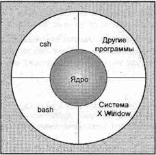
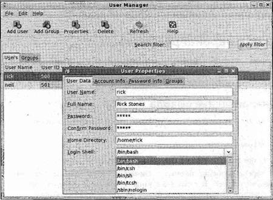
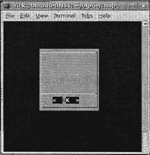
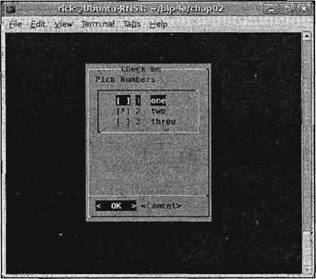
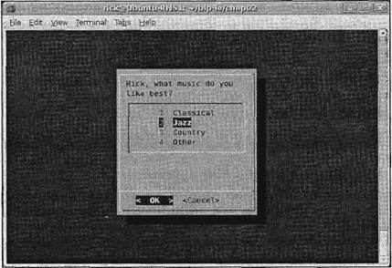
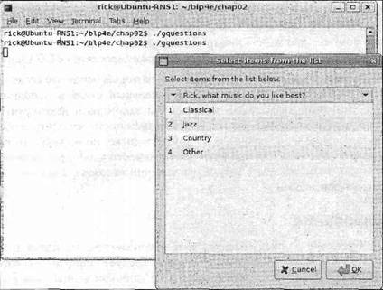

|
|||||||||||||||||||||||||||||||||||||||||||||||||||||||||||||||||||||||||||||||||||||||||||||||||||||||||||||||||||||||||||||||||||||||||||||||||||||||||||||||||||||||||||||||||||||||||||||||||||||||||||||||||||||||||||||||||||||||||||||||||||||||||||||||||||||||||||||||||||||||||||||||||||||||||||||||||||||||||||||||||||||||||||||||||||||||||||||||||||||||||||||||||||||||||||||||||||||
|
|
Глава 2Программирование средствами командной оболочки Начав книгу с программирования в ОС Linux на языке С, теперь мы сделаем отступление и остановимся на написании программ в командной оболочке. Почему? ОС Linux не относится к системам, у которых интерфейс командной строки — запоздалое детище графического интерфейса. У систем UNIX, прообраза Linux, первоначально вообще не было графического интерфейса; все выполнялось из командной строки. Поэтому оболочка командной строки UNIX все время развивалась и превратилась в очень мощный инструмент. Эти свойства перекочевали и в Linux, и некоторые самые серьезные задачи вы можете выполнить наиболее легким способом именно из командной оболочки. Поскольку она так важна для ОС Linux и столь полезна для автоматизации простых задач, программирование средствами командной оболочки рассматривается прежде всего. В этой главе мы познакомим вас с синтаксисом, структурами и командами, доступными при программировании в командной оболочке, как правило, используя интерактивные (основанные на экранах) примеры. Они помогут продемонстрировать функциональные возможности командной оболочки и собственные действия. Мы также бросим беглый взгляд на пару особенно полезных утилит режима командной строки, часто вызываемых из командной оболочки: grep и find. Рассматривая утилиту grep, мы познакомимся с основными положениями, касающимися регулярных выражений, которые появляются в утилитах ОС Linux и языках программирования, таких как Perl, Ruby и PHP. В конце главы вы узнаете, как писать настоящие сценарии, которые будут перепрограммироваться и расширяться на языке С на протяжении всей книги. В этой главе рассматриваются следующие темы: □ что такое командная оболочка; □ теоретические основы; □ тонкости синтаксиса: переменные, условия и управление программой; □ списки; □ функции; □ команды и их выполнение; □ встроенные (here) документы; □ отладка; □ утилита grep и регулярные выражения; □ утилита find. Если вы столкнулись со сложным сценарием командной оболочки при администрировании системы, хотите смоделировать вашу последнюю грандиозную (но удивительно простую) идею или просто повысить производительность какой-либо итеративной задачи, эта глава вам будет полезна. Почему программа в командной оболочке?Одна из причин применения командной оболочки — возможность быстрого и простого программирования. Более того, командная оболочка всегда есть даже в самых упрощенных установках ОС Linux, поэтому благодаря простому моделированию вы сможете понять, работает ли ваша идея. Командная оболочка очень удобна и для небольших утилит, выполняющих относительно простую задачу, для которой производительность менее важна, чем простые настройка, сопровождение и переносимость. Вы можете применять оболочку для управления процессами, обеспечивая выполнение команд в заданном порядке, зависящем от успешного завершения каждого этапа выполнения. Хотя внешне командная оболочка очень похожа на режим командной строки в ОС Windows, она гораздо мощнее и способна выполнять самостоятельно очень сложные программы. Вы можете не только выполнять команды и вызывать утилиты ОС Linux; но и разрабатывать их. Командная оболочка выполняет программы оболочки, часто называемые сценариями или скриптами, которые интерпретируются во время выполнения. Такой подход облегчает отладку, потому что вы легко можете выполнять программу построчно и не тратить время на перекомпиляцию. Но для задач, которым важно время выполнения или необходимо интенсивное использование процессора, командная оболочка оказывается неподходящей средой. Немного теорииВот мы и добрались до теоретических основ UNIX и, конечно, Linux. ОС UNIX основана на интенсивном многократном применении кода и зависит от него. Вы разработали маленькую простую утилиту, и пользователи применяют ее как одну из ссылок в строке, формирующей команду. Одно из наслаждений, доставляемых ОС Linux, — разнообразие имеющихся отличных средств. Примером может служить следующая команда: $ ls -al | more Эта команда применяет утилиты lsи moreи передает вывод списка файлов для поэкранного отображения. Каждая утилита — это отдельный блок. Зачастую вы можете применять множество мелких утилит для создания больших и сложных комплексов программ. Например, если вы хотите напечатать контрольную копию справочного руководства оболочки bash, примените следующую команду: $ man bash | col -b | lpr Более того, благодаря автоматической обработке типов файлов пользователям этих утилит обычно не нужно знать, на каком языке данные программы написаны. Если необходимо ускорить выполнение утилиты, как правило, ее сначала моделируют в командной оболочке и затем, когда работоспособность утилиты проверена, реализуют ее на языке С или С++, Perl, Python или каком-либо другом, обеспечивающем более быстрое выполнение. В противном случае, если в командной оболочке утилита действует адекватно, вы вполне можете оставить ее в покое. Необходимость переделки сценария зависит от того, нуждается ли он в оптимизации, должен ли он быть переносимым, необходимо ли обеспечить легкую модификацию и не перерос ли он (как это обычно случается) первоначально поставленную задачу. Примечание Что такое командная оболочка?Прежде чем переходить к обсуждению того, как программа использует оболочку, давайте рассмотрим, как функционирует оболочка и какие оболочки есть в Linux-подобных системах. Командная оболочка — это программа, которая действует как интерфейс между вами и ОС Linux, позволяя вам вводить команды, которые должна выполнить операционная система. В этом смысле она похожа на командную строку в ОС Windows, но, как уже упоминалось, командные оболочки Linux гораздо мощнее. Например, ввод и вывод можно перенаправить с помощью символов <и >, передавать данные между двумя одновременно выполняющимися программами с помощью символа |, а перехватывать вывод подпроцесса с помощью конструкции $(...). В ОС Linux вполне может сосуществовать несколько установленных командных оболочек, и разные пользователи могут выбрать ту, которая им больше нравится. На рис. 2.1 показано, как командная оболочка (на самом деле, две командные оболочки: bash и csh) и другие программы располагаются вокруг ядра Linux.  Рис. 2.1 Поскольку ОС Linux — модульная система, вы можете вставить и применять одну из множества различных стандартных командных оболочек, хотя большинство из них — потомки первоначальной оболочки Bourne. В Linux стандартная командная оболочка, всегда устанавливаемая как /bin/sh и входящая в комплект средств проекта GNU, называется bash (GNU Bourne-Again SHell). Именно ее мы будем применять, т. к. это отличная командная оболочка, всегда устанавливаемая в системах Linux, со свободно распространяемым программным кодом и переносимая почти на все варианты UNIX-систем. В данной главе используется оболочка bash версии 3, и в большинстве случаев применяются ее функциональные возможности, общие для всех командных оболочек, удовлетворяющих требованиям стандарта POSIX. Мы полагаем, что командная оболочка, установленная как /bin/sh и для вашей учетной записи, считается командной оболочкой по умолчанию. В большинстве дистрибутивов Linux программа /bin/sh, командная оболочка по умолчанию, — это ссылка на программу /bin/bash. Вы можете определить используемую в вашей системе версию bash с помощью следующей команды: $ /bin/bash --version GNU bash, version 3.2.9(1)-release (i686-pc-linux-gnu) Copyright (C) 2005 Free Software Foundation, Inc. Примечание Когда создаются учетные записи пользователей ОС Linux, вы можете задать командную оболочку, которой они будут пользоваться, в момент создания учетной записи пользователя или позже, откорректировав ее параметры. На рис. 2.2 показан выбор командной оболочки для пользователя дистрибутива Fedora. Рис. 2.2 Существует много других командных оболочек, распространяемых свободно или на коммерческой основе. В табл. 2.1 предлагается краткая сводка некоторых самых распространенных командных оболочек. Таблица 2.1
За исключением оболочки C-shell и небольшого числа ее производных все перечисленные оболочки очень похожи и очень близки к оболочке, определенной в спецификациях Х/Оpen 4.2 и POSIX 1003.2. В спецификации POSIX 1003.2 задан минимум, необходимый для создания командной оболочки, а в спецификации Х/Open представлена более дружественная и мощная оболочка. Каналы и перенаправлениеПрежде чем заняться подробностями программ командной оболочки, необходимо сказать несколько слов о возможностях перенаправления ввода и вывода программ (не только программ командной оболочки) в ОС Linux. Перенаправление выводаВозможно, вы уже знакомы с некоторыми видами перенаправления, например, таким как: $ ls -l > lsoutput.txt сохраняющим вывод команды ls в файле с именем lsoutput.txt. Однако перенаправление позволяет сделать гораздо больше, чем демонстрирует этот простой пример. В главе 3 вы узнаете больше о дескрипторах стандартных файлов, а сейчас вам нужно знать только то, что дескриптор файла 0 соответствует стандартному вводу программы, дескриптор файла 1 — стандартному выводу, а дескриптор файла 2 — стандартному потоку ошибок. Каждый из этих файлов можно перенаправлять независимо друг от друга. На самом деле можно перенаправлять и другие дескрипторы файлов, но, как правило, нет нужды перенаправлять любые другие дескрипторы, кроме стандартных: 0, 1 и 2. В предыдущем примере стандартный вывод перенаправлен в файл с помощью оператора >. По умолчанию, если файл с заданным именем уже есть, он будет перезаписан. Если вы хотите изменить поведение по умолчанию, можно применить команду set -о noclobber(или set -С), которая устанавливает опцию noclobber, чтобы помешать перезаписи при перенаправлении. Отменить эту опцию можно с помощью команды set +о noclobber. Позже в этой главе будут приведены другие опции команды set. Для дозаписи в конец файла используйте оператор >>. Например, команда $ ps >> lsoutput.txt добавит вывод команды psв конец заданного файла. Для перенаправления стандартного потока ошибок перед оператором >вставьте номер дескриптора файла, который хотите перенаправить. Поскольку у стандартного потока ошибок дескриптор файла 2, укажите оператор 2>. Часто бывает полезно скрывать стандартный поток ошибок, запрещая вывод его на экран. Предположим, что вы хотите применить команду killдля завершения процесса из сценария. Всегда существует небольшой риск, что процесс закончится до того, как выполнится команда kill. Если это произойдет, команда kill выведет сообщение об ошибке в стандартный поток ошибок, который по умолчанию появится на экране. Перенаправив стандартный вывод команды и ошибку, вы сможете помешать команде killвыводить какой бы то ни было текст на экран. Команда $ kill -HUP 1234 >killout. txt 2>killer.txt поместит вывод и информацию об ошибке в разные файлы. Если вы предпочитаете собрать оба набора выводимых данных в одном файле, можно применить оператор >&для соединения двух выводных потоков. Таким образом, команда $ kill -1 1234 >killerr.txt 2>&1 поместит свой вывод и стандартный поток ошибок в один и тот же файл. Обратите внимание на порядок следования операторов. Приведенный пример читается как "перенаправить стандартный вывод в файл killerr.txt, а затем перенаправить стандартный поток ошибок туда же, куда и стандартный вывод". Если вы нарушите порядок, перенаправление выполнится не так, как вы ожидаете. Поскольку обнаружить результат выполнения команды killможно с помощью кода завершения (который будет подробно обсуждаться далее в этой главе), часто вам не потребуется сохранять какой бы то ни было стандартный вывод или стандартный поток ошибок. Для того чтобы полностью отбросить любой вывод, вы можете использовать универсальную "мусорную корзину" Linux, /dev/null, следующим образом: $ kill -l 1234 >/dev/null 2>&1 Перенаправление вводаТакже как вывод вы можете перенаправить ввод. Например, $ more < killout.txt Понятно, что это тривиальнейший пример для ОС Linux; команда moreв системе Linux в отличие от своего эквивалента командной строки в ОС Windows с радостью принимает имена файлов в качестве параметров. КаналыВы можете соединять процессы с помощью оператора канала ( |). В ОС Linux, в отличие от MS-DOS, процессы, соединенные каналами, могут выполняться одновременно и автоматически переупорядочиваться в соответствии с потоками данных между ними. Как пример, можно применить команду sortдля сортировки вывода команды ps. Если не применять каналы, придется использовать несколько шагов, подобных следующим: $ ps > psout.txt $ sort psout.txt > pssort.out Соединение процессов каналом даст более элегантное решение: $ ps | sort > pssort.out Поскольку вы, вероятно, захотите увидеть на экране вывод, разделенный на страницы, можно подсоединить третий процесс, more, и все это в одной командной строке: $ ps | sort | more Практически нет ограничений на допустимое количество процессов. Предположим, что вы хотите видеть все имена выполняющихся процессов, за исключением командных оболочек. Можно применить следующую командную строку: $ ps -хо соmm | sort | uniq | grep -v sh | more В ней берется вывод команды ps, сортируется в алфавитном порядке, из него извлекаются процессы с помощью команды uniq, применяется утилита grep -v shдля удаления процесса с именем shи в завершение полученный список постранично выводится на экран. Как видите, это гораздо более элегантное решение, чем строка из отдельных команд, каждая со своими временными файлами. Но в этом случае имейте в виду следующее. Если строка состоит из команд, файл вывода создается или записывается сразу, как только сформирован набор команд, поэтому в строке из нескольких команд никогда не используйте дважды одно и то же имя файла. Если вы попытаетесь сделать что-то подобное: cat mydata.txt | sort | uniq > mydata.txt то в результате получите пустой файл, т.к. вы перезапишете файл mydata.txt, прежде чем прочтете его. Командная оболочка как язык программированияТеперь, когда вы увидели некоторые базовые операции командной оболочки, самое время перейти к реальным программам оболочки. Есть два способа написания таких программ. Вы можете ввести последовательность команд и разрешить командной оболочке выполнить их в интерактивном режиме или сохранить эти команды в файле и затем запускать его как программу. Интерактивные программыЛегкий и очень полезный во время обучения или тестирования способ проверить работу небольших фрагментов кода — просто набрать с клавиатуры в командной строке сценарий командной оболочки. Предположим, что у вас большое количество файлов на языке С, и вы хотите проверить наличие в них строки POSIX. Вместо того чтобы искать в файлах строку с помощью команды grepи затем выводить на экран отдельно каждый файл, вы можете выполнить всю операцию в интерактивном сценарии, похожем на следующий: $ for file in * > do > if grep -l POSIX $file > then > more $file > fi > done posix This is a file with POSIX in it - treat it well $ Обратите внимание на то, как меняется знак $, стандартная подсказка или приглашение командной оболочки, на символ >, когда оболочка ожидает очередной ввод. Вы можете продолжить набор, дав оболочке понять, когда закончите, и сценарий немедленно выполнится. В этом примере команда grepвыводит на экран найденные ею имена файлов, содержащих строку POSIX, а затем команда moreотображает на экране содержимое файла. В конце на экран возвращается приглашение командной оболочки. Обратите внимание также на то, что вы ввели переменную командной оболочки, которая обрабатывает каждый файл для самодокументирования сценария. С таким же успехом вы могли бы использовать переменную i, но имя fileболее информативно с точки зрения пользователей. Командная оболочка также обрабатывает групповые символы или метасимволы (часто называемые знаками подстановки). Вы почти наверняка знаете о применении символа *как знака подстановки, соответствующего строке символов. Но вы можете не знать о существовании односимвольного знака подстановки, ?, а конструкция [set]позволяет проверить любое количество одиночных символов, [^set]— применяет логическую операцию "НЕ" к множеству, т.е. включает все, кроме того, что вы задали. Подстановочный шаблон из фигурных скобок {}(доступен в некоторых командных оболочках, включая bash) позволяет формировать множество из произвольных строк, которое командная оболочка раскроет. Например, команда $ ls my_{finger, toe}s будет выводить файлы my_fingers и my_toes. Эта команда использует оболочку для проверки всех файлов в текущем каталоге. Мы вернемся к этим правилам соответствия шаблонам в конце главы, когда будем более подробно рассматривать утилиту grepи возможности регулярных выражений. Опытные пользователи ОС Linux, вероятно, выполнят эту операцию более эффективным способом, возможно, с помощью следующей команды: $ more `grep -l POSIX *` или синонимической конструкции $ more $(grep -l POSIX *) В дополнение команда $ grep -l POSIX * | more выведет на экран имя файла, содержащего строку POSIX. В этом сценарии мы видим, что командная оболочка для выполнения трудной работы привлекает другие команды, например, grepи more. Оболочка просто позволяет собрать вместе несколько имеющихся команд новыми оригинальными способами. В следующих сценариях вы увидите использование знаков подстановки неоднократно. Мы подробно рассмотрим целую область подстановок, когда будем знакомиться с регулярными выражениями в разделе, посвященном команде grep. Заниматься этой канителью каждый раз, когда хочешь выполнить последовательность команд, утомительно. Нужно сохранить команды в файле, который принято называть сценарием или скриптом командной оболочки, а затем вы можете выполнять эти файлы, когда захотите. Создание сценарияС помощью любого текстового редактора необходимо создать файл, содержащий команды. Создайте файл с именем first с таким содержимым: #!/bin/sh # first # Этот файл просматривает все файлы в текущем каталоге # для поиска строки POSIX, а затем выводит имена # найденных файлов в стандартный вывод. for file in * do if grep -q POSIX $file then echo $file fi done exit 0 Комментарий начинается со знака #и продолжается до конца строки. Принято знак #ставить в первой символьной позиции строки. Сделав такое общее заявление, далее отметим, что первая строка #!/bin/sh— это особая форма комментария; символы #!сообщают системе о том, что следующий за ними аргумент — программа, применяемая для выполнения данного файла. В данном случае программа /bin/sh— командная оболочка, применяемая по умолчанию. Примечание Поскольку сценарий по существу обрабатывается как стандартный ввод командной оболочки, он может содержать любые команды ОС Linux, на которые ссылается переменная окружения PATH. Команда exitгарантирует, что сценарий вернет осмысленный код завершения (подробнее об этом чуть позже в данной главе). Он редко проверяется при интерактивном выполнении программ, но если вы хотите запускать данный сценарий из другого сценария и проверять, успешно ли он завершился, возврат соответствующего кода завершения очень важен. Даже если вы не намерены разрешать вашему сценарию запускаться из другого сценария, все равно следует завершать его с подходящим кодом. Верьте в полезность своего сценария: вдруг когда-нибудь он потребуется для многократного использования как часть другого сценария. В программировании средствами командной оболочки ноль означает успех. Поскольку представленный вариант сценария не может обнаружить какие-либо ошибки, он всегда возвращает код успешного завершения. Мы вернемся к причинам использования нулевого кода завершения для обозначения успешного выполнения программы позже в этой главе, когда будем более подробно обсуждать команду exit. В сценарии не используются никакие расширения и суффиксы имен файлов; ОС Linux и UNIX, как правило, редко применяют при именовании файлов расширения для указания типа файла. Вы могли бы использовать расширение sh или любое другое, командную оболочку это не волнует. У большинства предустановленных сценариев нет никакого расширения в именах файлов и лучший способ проверить, сценарий это или нет применить команду file, например, file firstили file /bin/bash. Пользуйтесь любыми правилами, принятыми в вашей организации или удобными для вас. Превращение сценария в исполняемый файлТеперь, когда у вас есть файл сценария, его можно выполнить двумя способами. Более простой путь — запустить оболочку с именем файла сценария как параметром: $ /bin/sh first Этот вариант будет работать, но гораздо лучше запускать сценарий, введя его имя и тем самым присвоив ему статус других команд Linux. Сделаем это с помощью команды chmod, изменив режим файла (file mode) и сделав его исполняемым для всех пользователей: $ chmod +х first Примечание После этого вы можете выполнять файл с помощью команды $ first При этом может появиться сообщение об ошибке, говорящее о том, что команда не найдена. Почти наверняка причина в том, что в переменной PATHне задан текущий каталог для поиска выполняемых команд. Исправить это можно либо введя с клавиатуры в командной строке PATH=$PATH:., либо добавив данную команду в конец файла .bash_profile. Затем выйдите из системы и зарегистрируйтесь снова. В противном случае введите ./firstв каталог, содержащий сценарий, чтобы задать командной оболочке полный относительный путь к файлу. Указание пути, начинающегося с символов ./, дает еще одно преимущество: в этом случае вы случайно не сможете выполнить другую команду с тем же именем, что и у вашего файла сценария. Примечание После того как вы убедитесь в корректной работе вашего сценария, можете переместить его в более подходящее место, чем текущий каталог. Если команда предназначена только для собственных нужд, можете создать каталог bin в своем исходном каталоге и добавить его в свой путь. Если вы хотите, чтобы сценарий выполняли другие пользователи, можно использовать каталог /usr/local/bin или другой системный каталог как удобное, хранилище для вновь созданных программ. Если в вашей системе у вас нет прав суперпользователя, можно попросить системного администратора скопировать ваш файл для вас, хотя сначала, возможно, придется убедить его в неоспоримых достоинствах вашего файла. Для того чтобы установить владельца и права доступа к файлу, администратору придется задать такую последовательность команд: # ср first /usr/local/bin # chown root /usr/local/bin/first # chgrp root /usr/local/bin/first # chmod 755 /usr/local/bin/first Обратите внимание на то, что в данном случае вместо изменения определенной части флагов прав доступа вы используете абсолютную форму команды chmod, потому что точно знаете, какие требуются права доступа. Если захотите, можно применить более длинную, но более понятную форму команды chmod: # chmod u=rwx, go=rx /usr/local/bin/first Более подробную информацию можно найти в справочном руководстве команды chmod. Примечание Синтаксис командной оболочкиТеперь, когда мы рассмотрели пример простой программы командной оболочки, пришло время углубиться в функциональные возможности программирования средствами командной оболочки. Командная оболочка — довольно легкий для изучения язык программирования, в немалой степени потому, что легко проверить в интерактивном режиме работу небольших фрагментов программы, прежде чем собирать их в большие сценарии. Командную оболочку bash можно использовать для создания довольно больших структурированных программ. В нескольких последующих разделах мы обсудим такие темы: □ переменные: строки, числа, переменные окружения и параметры; □ условия: булевы или логические выражения (Booleans); □ управление выполнением программы: if, elif, for, while, until, case; □ списки; □ функции; □ команды, встроенные в командную оболочку; □ получение результата выполнения команды; □ встроенные (here) документы. ПеременныеВ командной оболочке переменные перед применением обычно не объявляются. Вместо этого вы создаете их, просто используя (например, когда присваиваете им начальное значение). По умолчанию все переменные считаются строками и хранятся как строки, даже когда им присваиваются числовые значения. Командная оболочка и некоторые утилиты преобразуют строки, содержащие числа, в числовые значения, когда нужно их обработать должным образом. Linux — система, чувствительная к регистру символов, поэтому командная оболочка считает fooи Fooдвумя разными переменными, отличающимися от третьей переменной FOO. В командной оболочке можно получить доступ к содержимому переменной, если перед ее именем ввести знак $. Каждый раз, когда вы извлекаете содержимое переменной, вы должны к началу ее имени добавить знак $. Когда вы присваиваете переменной значение, просто используйте имя переменной, которая при необходимости будет создана динамически. Легко проверить содержимое переменной, выведя ее на терминал с помощью команды echoи указав перед именем переменной знак $. Вы можете увидеть это в действии, если в командной строке будете задавать и проверять разные значения переменной salutation: $ salutation=Hello $ echo $salutation Hello $ salutation="Yes Dear" $ echo $salutation Yes Dear $ salutation=7+5 $ echo $salutation 7+5 Примечание Вы можете присвоить переменной пользовательский ввод с помощью команды read. Она принимает один параметр — имя переменной, в которую будут считываться данные, и затем ждет, пока пользователь введет какой-либо текст. Команда readобычно завершается после нажатия пользователем клавиши <Enter>. При чтении переменной с терминала, как правило, заключать ее значения в кавычки не требуется: $ read salutation Wie geht's? $ echo $salutation Wie geht's?Заключение в кавычки Прежде чем двигаться дальше, вам следует уяснить одно правило командной оболочки: использование кавычек. Обычно параметры в сценариях отделяются неотображаемыми символами или знаками форматирования (например, пробелом, знаком табуляции или символом перехода на новую строку). Если вы хотите, чтобы параметр содержал один или несколько неотображаемых символов, его следует заключить в кавычки. Поведение переменных, таких как $foo, заключенных в кавычки, зависит от вида используемых кавычек. Если вы заключаете в двойные кавычки $-представление переменной, оно во время выполнения командной строки заменяется значением переменной. Если вы заключаете его в одинарные кавычки или апострофы, никакой замены не происходит. Вы также можете отменить специальное назначение символа $, вставив перед ним символ \(обратный слэш). Выполним упражнение 2.1. Упражнение 2.1. Игра с переменнымиВ этом упражнении показано, как кавычки влияют на вывод переменной: #!/bin/sh myvar="Hi there" echo $myvar echo "$myvar" echo '$myvar' echo \$myvar echo Enter some text read myvar echo '$myvar' now equals $myvar exit 0 Данный сценарий ведет себя следующим образом: $ ./variable Hi there Hi there $myvar $myvar Enter some text Hello World $myvar now equals Hello World Как это работает Создается переменная myvar, и ей присваивается строка Hi there. Содержимое переменной выводится на экран с помощью команды echo, демонстрирующей, как символ $раскрывает содержимое переменной. Вы видите, что применение двойных кавычек не влияет на раскрытие содержимого переменной, а одинарные кавычки и обратный слэш влияют. Вы также применяете команду readдля получения строки от пользователя. Переменные окружения Когда стартует сценарий командной оболочки, некоторым переменным присваиваются начальные значения из окружения или рабочей среды. Обычно такие переменные обозначают прописными буквами, чтобы отличать их в сценариях от определенных пользователем переменных (командной оболочки), которые принято обозначать строчными буквами. Формируемые переменные зависят от ваших персональных настроек. Многие из них перечислены на страницах справочных руководств, а основные приведены в табл. 2.2. Таблица 2.2
ПримечаниеПеременные-параметры Если ваш сценарий вызывается с параметрами, создается несколько дополнительных переменных. Если параметры не передаются, переменная окружения $#все равно существует, но равна 0. Переменные-параметры перечислены в табл. 2.3. Таблица 2.3
Легче всего увидеть разницу между переменными-параметрами $*и $@, опробовав их. $ IFS='' $ set foo bar bam $ echo "$@" foo bar bam $ echo "$*" foobarbam $ unset IFS $ echo "$*" foo bar bam Как видите, заключенная в двойные кавычки переменная-параметр $@представляет позиционные параметры как отдельные поля, независимо от значения переменной окружения IFS. Как правило, если вы хотите получить доступ к параметрам, лучше использовать переменную-параметр. Помимо вывода на экран содержимого переменных с помощью команды echo, вы также можете прочитать его командой read(упражнение 2.2). Упражнение 2.2. Манипулирование параметрами и переменными окружения В приведенном далее сценарии показано несколько простых манипуляций переменными. После ввода сценария и записи его в файл try_var не забудьте превратить его в исполняемый файл с помощью команды chmod +х try_var. #!/bin/sh salutation="Hello" echo $salutation echo "The program $0 is now running" echo "The second parameter was $2" echo "The first parameter was $1" echo "The parameter list was echo "The user's home directory is $HOME" echo "Please enter a new greeting" read salutation echo $salutation echo "The script is now complete" exit 0 Если вы выполните этот сценарий, то получите следующий вывод: $ ./try_var foo bar baz Hello The program ./try_var is now running The second parameter was bar The first parameter was foo The parameter list was foo bar baz The user's home directory is /home/rick Please enter a new greeting Sire Sire The script is now complete $ Как это работает Сценарий создает переменную salutation, выводит на экран ее содержимое и затем показывает, что уже сформированы и имеют соответствующие значения различные переменные-параметры и переменная окружения $НОМЕ. Далее в этой главе мы рассмотрим более подробно подстановку параметров. УсловияОснова всех языков программирования — средства проверки условий и выполнение различных действий с учетом результатов этой проверки. Но прежде чем говорить об этом, давайте рассмотрим условные конструкции, которые можно применять в сценариях командной оболочки, а затем познакомимся с использующими их управляющими структурами. Сценарий командной оболочки может проверить код завершения любой команды, вызванной из командной строки, включая сценарии, написанные вами. Вот почему так важно всегда включать в создаваемые вами сценарии команду exit с определенным значением. Команда test или [На практике в большинстве сценариев широко используется команда [или test— логическая проверка командной оболочки. В некоторых системах команды [и test— синонимы, за исключением того, что при использовании команды [для удобочитаемости применяется и завершающая часть ]. Наличие команды [может показаться странным, но в программном коде она упрощает синтаксис и делает его более похожим на другие языки программирования. Примечание Мы представим команду testна примере одного простейшего условия: проверки наличия файла. Для нее понадобится следующая команда: test -f <имя_файла>, поэтому в сценарии можно написать if test -f fred.c then ... fi To же самое можно записать следующим образом: if [ -f fred.c ] then ... fi Код завершения команды test(выполнено ли условие) определяет, будет ли выполняться условный программный код. Примечание Варианты условий, которые вы можете применять в команде test, делятся на три типа: строковые сравнения, числовые сравнения и проверка файловых флагов (file conditionals). Эти типы условий описаны в табл. 2.4. Таблица 2.4
Примечание Мы немного сами себя обогнали, но далее следует пример тестирования состояния файла /bin/bash, так что вы сможете увидеть, как это выглядит на практике. #!/bin/sh if [ -f /bin/bash ] then echo "file /bin/bash exists" fi if [ -d /bin/bash ] then echo "/bin/bash is a directory" else echo "/bin/bash is NOT a directory" fi Для того чтобы тест мог оказаться истинным, предварительно, для проверки всех файловых флагов требуется наличие файла. Данный перечень включает только самые широко используемые опции команды test, полный список можно найти в интерактивном справочном руководстве. Если вы применяете оболочку bash, в которую встроена команда test, используйте команду help testдля получения дополнительных сведений. Позже в этой главе мы применим некоторые из этих опций. Теперь, когда вы познакомились с условиями, можно рассмотреть управляющие структуры, использующие эти условия. Управляющие структурыВ командной оболочке есть ряд управляющих структур или конструкций, похожих на аналогичные структуры в других языках программирования. Примечаниеif Управляющий оператор ifочень прост: он проверяет результат выполнения команды и затем в зависимости от условиявыполняет ту или иную группу операторов. if условие then операторы else операторы fi Наиболее часто оператор ifприменяется, когда задается вопрос, и решение принимается в зависимости от ответа: #!/bin/sh echo "Is it morning? Please answer yes or no " read timeofday if [ $timeofday = "yes" ]; then echo "Good morning" else echo "Good afternoon" fi exit 0 В результате будет получен следующий вывод на экран: Is it morning? Please answer yes or no yes Good morning $ В этом сценарии для проверки содержимого переменной timeofdayприменяется команда [. Результат оценивается оператором командной оболочки if, который затем разрешает выполнять разные строки программного кода. Примечаниеelif К сожалению, с этим простым сценарием связано несколько проблем. Во-первых, он принимает в значении no(нет) любой ответ за исключением yes(да). Можно помешать этому, воспользовавшись конструкцией elif, которая позволяет добавить второе условие, проверяемое при выполнении части elseоператора if(упражнение 2.3). Упражнение 2.3. Выполнение проверок с помощью elif Вы можете откорректировать предыдущий сценарий так, чтобы он выводил сообщение об ошибке, если пользователь вводит что-либо отличное от yesили no. Для этого замените ветку elseветкой elifи добавьте еще одно условие: #!/bin/sh echo "Is it morning? Please answer yes or no " read timeofday if [ $timeofday = "yes" ] then echo "Good morning" elif [ $timeofday = "no" ]; then echo "Good afternoon" else echo "Sorry, $timeofday not recognized. Enter yes or no " exit 1 fi exit 0 Как это работает Этот пример очень похож на предыдущий, но теперь, если первое условие не равно true, оператор командной оболочки elifпроверяет переменную снова. Если обе проверки не удачны, выводится сообщение об ошибке, и сценарий завершается со значением 1, которое в вызывающей программе можно использовать для проверки успешного выполнения сценария. Проблема, связанная с переменными Данный сценарий исправляет наиболее очевидный дефект, а более тонкая проблема остается незамеченной. Запустите новый вариант сценария, но вместо ответа на вопрос просто нажмите клавишу <Enter> (или на некоторых клавиатурах клавишу <Return>). Вы получите сообщение об ошибке: [: =: unary operator expected Что же не так? Проблема в первой ветви оператора if. Когда проверялась переменная timeofday, она состояла из пустой строки. Следовательно, ветвь оператора ifвыглядела следующим образом: if [ = "yes" ] и не представляла собой верное условие. Во избежание этого следует заключить имя переменной в кавычки: if [ "$timeofday" = "yes" ] Теперь проверка с пустой переменной будет корректной: if [ "" = "yes" ] Новый сценарий будет таким: #!/bin/sh echo "Is it morning? Please answer yes or no " read timeofday if [ "$timeofday" = "yes" ] then echo "Good morning" elif [ "$timeofday" = "no" ]; then echo "Good afternoon" else echo "Sorry, $timeofday not recognized. Enter yes or no " exit 1 fi exit 0 Этот вариант безопасен, даже если пользователь в ответ на вопрос просто нажмет клавишу <Enter>. Примечаниеfor Применяйте конструкцию forдля обработки в цикле ряда значений, которые могут представлять собой любое множество строк. Строки могут быть просто перечислены в программе или, что бывает чаще, представлять собой результат выполненной командной оболочкой подстановки имен файлов. Синтаксис этого оператора прост: for переменная in значения do операторы done Выполните упражнения 2.4 и 2.5. Упражнение 2.4. Применение циклаforк фиксированным строкам В командной оболочке значения обычно представлены в виде строк, поэтому можно написать следующий сценарий: #!/bin/sh for foo in bar fud 43 do echo $foo done exit 0 В результате будет получен следующий вывод: bar fud 43 Примечание Как это работает В данном примере создается переменная fooи ей в каждом проходе цикла forприсваиваются разные значения. Поскольку оболочка считает по умолчанию все переменные строковыми, применять строку 43 так же допустимо, как и строку fud. Упражнение 2.5. Применение цикла forс метасимволами Как упоминалось ранее, цикл forобычно используется в командной оболочке вместе с метасимволами или знаками подстановки для имен файлов. Это означает применение метасимвола для строковых значений и предоставление оболочке возможности подставлять все значения на этапе выполнения. Вы уже видели этот прием в первом примере first. В сценарии применялись средства подстановки командной оболочки — символ *для подстановки имен всех файлов из текущего каталога. Каждое из этих имен по очереди используется в качестве значения переменной $fileвнутри цикла for. Давайте бегло просмотрим еще один пример подстановки с помощью метасимвола. Допустим, что вы хотите вывести на экран все имена файлов сценариев в текущем каталоге, начинающиеся с буквы "f", и вы знаете, что имена всех ваших сценариев заканчиваются символами .sh. Это можно сделать следующим образом: #!/bin/sh for file in $(ls f*.sh); do lpr $file done exit 0 Как это работает В этом примере показано применение синтаксической конструкции $(команда), которая будет подробно обсуждаться далее (в разделе, посвященном выполнению команд). Обычно список параметров для цикла forзадается выводом команды, включенной в конструкцию $(). Командная оболочка раскрывает f*.sh, подставляя имена всех файлов, соответствующих данному шаблону. Примечаниеwhile Поскольку по умолчанию командная оболочка считает все значения строками, оператор forхорош для циклической обработки наборов строк, но не слишком удобен, если вы не знаете заранее, сколько раз придется его выполнить. Если нужно повторить выполнение последовательности команд, но заранее не известно, сколько раз следует их выполнить, вы, как правило, будете применять цикл whileсо следующей синтаксической записью: while условие do операторы done Далее приведен пример довольно слабой программы проверки паролей. #!/bin/sh echo "Enter password" read trythis while [ "$trythis" != "secret" ]; do echo "Sorry, try again" read trythis done exit 0 Следующие строки могут служить примером вывода данного сценария: Enter password password Sorry, try again secret $ Ясно, что это небезопасный способ выяснения пароля, но он вполне подходит для демонстрации применения цикла while. Операторы, находящиеся между операторами doи done, выполняются бесконечное число раз до тех пор, пока условие остается истинным ( true). В данном случае вы проверяете, равно ли значение переменной trythisстроке secret. Цикл будет выполняться, пока $trythisне равно secret. Затем выполнение сценария продолжится с оператора, следующего сразу за оператором done. until У цикла untilследующая синтаксическая запись: until условие do операторы done Она очень похожа на синтаксическую запись цикла while, но с обратным проверяемым условием. Другими словами, цикл продолжает выполняться, пока условиене станет истинным (true). Примечание Как пример цикла untilможно установить звуковой сигнал предупреждения, инициируемый во время регистрации нового пользователя, регистрационное имя которого передается в командную строку. #!/bin/bash until who | grep "$1" > /dev/null do sleep 60 done # Теперь звонит колокольчик и извещает о новом пользователе echo -е '\а' echo "**** $1 has just logged in ****" exit 0 Если пользователь уже зарегистрировался в системе, выполнять цикл нет необходимости. Поэтому естественно выбрать цикл until, а не цикл while. case Оператор caseнемного сложнее уже рассмотренных нами операторов. У него следующая синтаксическая запись: case переменная in образец [ | образец] ...) операторы;; образец [ | образец] ...) операторы;; esac Конструкция оператора caseвыглядит слегка устрашающей, но она позволяет довольно изощренным способом сопоставлять содержимое переменной с образцами и затем выполнять разные операторы в зависимости от того, с каким образцом найдено соответствие. Это гораздо проще, чем проверять несколько условий, применяемых во множественных операторах if, elifи else. Примечание Возможность сопоставлять многочисленные образцы и затем выполнять множественные связанные с образцом операторы делают конструкцию caseочень удобной для обработки пользовательского ввода. Лучше всего увидеть, как работает конструкция caseна примерах. Мы будем применять ее в упражнениях 2.6–2.8, каждый раз совершенствуя сопоставление с образцами. ПримечаниеУпражнение 2.6. Вариант 1: пользовательский ввод Вы можете написать новую версию сценария проверки пользовательского ввода с помощью конструкции case, сделав сценарий немного более избирательным и терпимым к неожиданным вариантам ввода. #!/bin/sh echo "Is it morning? Please answer yes or no " read timeofday case "$timeofday" in yes) echo "Good Morning";; no ) echo "Good Afternoon";; y ) echo "Good Morning";; n ) echo "Good Afternoon";; * ) echo "Sorry, answer not recognized";; esac exit 0 Как это работает Когда выполняется оператор case, он берет содержимое переменной timeofdayи сравнивает его поочередно с каждой строкой-образцом. Как только строка совпадает с введенной информацией, оператор caseвыполняет код, следующий за ), и завершается. Оператор caseвыполняет обычную подстановку в строках, которые он использует для сравнения. Следовательно, вы можете задать часть строки с последующим метасимволом *. Применение единственного символа *будет соответствовать совпадению с любой введенной строкой, поэтому поместите этот вариант после всех остальных образцов строк для того, чтобы задать некоторое стандартное поведение оператора case, если не будут найдены совпадения с другими строками-образцами. Это возможно, потому что оператор caseсравнивает с каждой строкой-образцом поочередно. Он не ищет наилучшее соответствие, а всего лишь первое встретившееся. Условие, принятое по умолчанию, часто оказывается невыполнимым, поэтому применение метасимвола *может помочь в отладке сценариев. Упражнение 2.7. Вариант 3: объединение образцов Предыдущая версия конструкции case, безусловно, элегантнее варианта с множественными операторами if, но, объединив все образцы, можно создать более красивую версию. #!/bin/sh echo "Is it morning? Please answer yes or no " read timeofday case "$timeofday" in yes | y | Yes | YES ) echo "Good Morning";; n* | N*) echo "Good Afternoon";; * ) echo "Sorry, answer not recognized";; esac exit 0 Как это работает Данный сценарий в операторе caseиспользует несколько строк-образцов в каждой ветви, таким образом, caseпроверяет несколько разных строк для каждого возможного оператора. Этот прием делает сценарий короче и, как показывает практика, облегчает его чтение. Приведенный программный код также показывает, как можно использовать метасимвол *, несмотря на то, что он может соответствовать непредусмотренным образцам. Например, если пользователь введет строку never, она будет соответствовать образцу n*, и на экран будет выведено приветствие Good Afternoon (Добрый день), хотя такое поведение в сценарии не предусматривалось. Учтите также, что заключенный в кавычки знак подстановки *не действует. Упражнение 2.8. Вариант 3: выполнение нескольких операторов В заключение, для того чтобы сделать сценарий многократно используемым, вам необходимо использовать другое значение кода завершения в том случае, когда применяется образец по умолчанию для непонятного варианта ввода. #!/bin/sh echo "Is it -morning? Please answer yes or no" read timeofday case "$timeofday" in yes | y | Yes | YES )
echo "Up bright and early this morning" ;; [nN]*) echo "Good Afternoon" ;; *) echo "Sorry, answer not recognized" echo "Please answer yes or no" exit 1 ;; esac exit 0 Как это работает Для демонстрации другого способа определения соответствия образцу в этом программном коде изменен вариант определения соответствия для ветви no. Также видно, как в каждой ветви оператора case может выполняться несколько операторов. Следует быть внимательным и располагать в операторе самые точные образцы строк первыми, а самые общие варианты образцов последними. Это очень важно, потому что оператор caseвыполняется, как только найдено первое, а не наилучшее соответствие. Если вы поставите ветвь *)первой, совпадение с этим образцом будет определяться всегда, независимо от варианта введенной строки. Примечание Для того чтобы сделать средства установления соответствия образцам более мощными, можно применять следующие строки-образцы: [yY] | [Yy][Ее][Ss]) В них ограничен набор разрешенных букв, но при этом допускаются разнообразные ответы и предлагается более строгий контроль, чем при применении метасимвола *. Списки Иногда может понадобиться сформировать последовательность команд. Например, вы хотите выполнить оператор, только если удовлетворяется несколько условий. if [ -f this_file ]; then if [ -f that_file ]; then if [ -f the_other_file ]; then echo "All files present, and correct" fi fi fi Или вы хотите, чтобы хотя бы одно условие из последовательности условий было истинным. if [ -f this_file ]; then foo="True" elif [ -f that_file ]; then foo="True" elif [ -f the_other_file ]; then foo="True" else foo="False" fi if ["$foo" = "True" ]; then echo "One of the files exists" fi Несмотря на то, что это можно реализовать с помощью нескольких операторов if, как видите, результаты получаются очень громоздкими. В командной оболочке есть пара специальных конструкций для работы со списками команд: И-список (AND list) и ИЛИ-список (OR list). Обе они часто применяются вместе, но мы рассмотрим синтаксическую запись каждой из них отдельно. И-cписок Эта конструкция позволяет выполнять последовательность команд, причем каждая последующая выполняется только при успешном завершении предыдущей. Синтаксическая запись такова:
Выполнение операторов начинается с самого левого, если он возвращает значение true(истина), выполняется оператор, расположенный справа от первого оператора. Выполнение продолжается до тех пор, пока очередной оператор не вернет значение false(ложь), после чего никакие операторы списка не выполняются. Операция &&проверяет условие предшествующей команды. Каждый оператор выполняется независимо, позволяя соединять в одном списке множество разных команд, как показано в приведенном далее сценарии. И-список успешно обрабатывается, если все команды выполнены успешно, в противном случае его обработка заканчивается неудачно. Выполните упражнение 2.9. Упражнение 2.9. И-спискиВ следующем сценарии вы обращаетесь к файлу file_one (для проверки его наличия, и если файл не существует, создаете его) и затем удаляете файл file_two. Далее И-список проверяет наличие каждого файла и между делом выводит на экран кое-какой текст. #!/bin/sh touch file_one rm -f file_two if [ -f file_one ] && echo "hello" [ -f file_two ] && echo " there" then echo "in if" else echo "in else" fi exit 0 Попробуйте выполнить сценарий, и вы получите следующий вывод: hello in else Как это работает Команды touchи rmгарантируют, что файлы в текущем каталоге находятся в известном состоянии. Далее И-список выполняет команду [ -f file one ], которая возвращает значение true, потому что вы только что убедились в наличии файла. Поскольку предыдущий оператор завершился успешно, теперь выполняется команда echo. Она тоже завершается успешно ( echoвсегда возвращает true). Затем выполняется третья проверка [ -f file_two ]. Она возвращает значение false, т.к. файл не существует. Поскольку последняя команда вернула false, заключительная команда echoне выполняется. В результате И-список возвращает значение false, поэтому в операторе ifвыполняется вариант else. ИЛИ-список Эта конструкция позволяет выполнять последовательность команд до тех пор, пока одна из них не вернет значение true, и далее не выполняется ничего более. У нее следующая синтаксическая запись: оператор1 || оператор2 || оператор3 || ... Операторы выполняются слева направо. Если очередной оператор возвращает значение false, выполняется следующий за ним оператор. Это продолжается до тех пор, пока очередной оператор не вернет значение true, после этого никакие операторы уже не выполняются. ИЛИ-список очень похож на И-список, за исключением того, что правило для выполнения следующего оператора — выполнение предыдущего оператора со значением false. Рассмотрим упражнение 2.10. Упражнение 2.10. ИЛИ-спискиСкопируйте сценарий из предыдущего упражнения и измените затененные строки следующим образом. #!/bin/sh rm -f file_one if [ -f file_one ] || echo "hello" || echo " there" then echo "in if" else echo "in else" fi exit 0 В результате выполнения данного сценария будет получен следующий вывод: hello in if Как это работает В первых двух строках просто задаются файлы для остальной части сценария. Первая команда списка [ -f file one ]возвращает значение false, потому что файла в каталоге нет. Далее выполняется команда echo. Вот это да — она возвращает значение true, и больше в ИЛИ-списке не выполняются никакие команды. Оператор ifполучает из списка значение true, поскольку одна из команд ИЛИ-списка (команда echo) вернула это значение. Результат, возвращаемый обоими этими списками, — это результат последней выполненной команды списка. Описанные конструкции списков выполняются так же, как аналогичные конструкции в языке С, когда проверяются множественные условия. Для определения результата выполняется минимальное количество операторов. Операторы, не влияющие на конечный результат, не выполняются. Обычно этот подход называют оптимизацией вычислений (short circuit evaluation). Комбинирование этих двух конструкций — высшее блаженство для любителей логических задач. Попробуйте проанализировать следующий список: [ -f file_one ] && команда в случае true || команда в случае false В нем будет выполняться первая команда в случае истинности проверки и вторая команда в противном случае. Всегда лучше всего поэкспериментировать с этими довольно необычными списками, и, как правило, вам придется использовать скобки для изменения порядка вычислений. Операторные блокиЕсли вы хотите применить несколько операторов в том месте программного кода, где разрешен только один, например в ИЛИ-списке или И-списке, то можете сделать это, заключив операторы в фигурные скобки {}и создав тем самым операторный блок. Например, в приложении, представленном далее в этой главе, вы увидите следующий фрагмент программного кода: get_confirm && { grep -v "$cdcatnum" $tracks_file > $temp_file cat $temp_file > $tracks_file echo add record_tracks } ФункцииВ командной оболочке можно определять функции, и, если вы пишете сценарии любого размера, функции можно применять для структурирования кода. Примечание Для определения функции в командной оболочке просто введите ее имя и следом за ним пустые круглые скобки, а операторы тела функции заключите в фигурные скобки. Имя_функции() { операторы } Выполните упражнения 2.11 и 2.12. Упражнение 2.11. Простая функцияДавайте начнем с действительно простой функции. #!/bin/sh foo() { echo "Function foo is executing" } echo "script starting" foo echo "script ended" exit 0 Выполняющийся сценарий, выведет на экран следующий текст: script starting Function foo is executingscript ended Как это работает Данный сценарий начинает выполняться с первой строки. Таким образом, ничего необычного нет, но, когда он находит конструкцию foo() {, он знает, что здесь дается определение функции, названной foo. Он запоминает ссылку на функцию и foo продолжает выполнение после обнаружения скобки }. Когда выполняется строка с единственным именем foo, командная оболочка знает, что нужно выполнить предварительно определенную функцию. Когда функция завершится, выполнение сценария продолжится в строке, следующей за вызовом функции foo. Вы должны всегда определить функцию прежде, чем сможете ее запустить, немного похоже на стиль, принятый в языке программирования Pascal, когда вызову функции предшествует ее определение, за исключением того, что в командной оболочке нет опережающего объявления (forward) функции. Это ограничение не создает проблем, потому что все сценарии выполняются с первой строки, поэтому если просто поместить все определения функций перед первым вызовом любой функции, все функции окажутся определенными до того, как будут вызваны. Когда функция вызывается, позиционные параметры сценария $*, $@, $#, $1, $2и т.д. заменяются параметрами функции. Именно так вы считываете параметры, передаваемые функции. Когда функция завершится, они восстановят свои прежние значения. Примечание Вы можете заставить функцию возвращать числовые значения с помощью команды return. Обычный способ возврата функцией строковых значений — сохранение строки в переменной, которую можно использовать после завершения функции. Другой способ — вывести строку с помощью команды echoи перехватить результат, как показано далее. foo() { echo JAY;} ... result="$(foo)" Вы можете объявлять локальные переменные в функциях командной оболочки с помощью ключевого слова local. В этом случае переменная действительна только в пределах функции. В других случаях функция может обращаться к переменным командной оболочки, у которых глобальная область действия. Если у локальной переменной то же имя, что и у глобальной, в пределах функции локальная переменная перекрывает глобальную. Для того чтобы убедиться в этом на практике, можно изменить предыдущий сценарий следующим образом. #!/bin/sh sample_text="global variable" foo() { local sample_text="local variable" echo "Function foo is executing" echo $sample_text } echo "script starting" echo $sample_text foo echo "script ended" echo $sample_text exit 0 При отсутствии команды return, задающей возвращаемое значение, функция возвращает статус завершения последней выполненной команды, Упражнение 2.12. Возврат значения В следующем сценарии, my_name, показано, как в функцию передаются параметры и как функции могут вернуть логический результат trueили false. Вы можете вызвать этот сценарий с параметром, задающим имя, которое вы хотите использовать в вопросе. 1. После заголовка командной оболочки определите функцию yes_or_no. #!/bin/sh yes_or_no() { echo "Is your name $* ? " while true do echo -n "Enter yes or no: " read x case "$x" in y | yes ) return 0;; n | no ) return 1;; * ) echo "Answer yes or no" esac done } 2. Далее начинается основная часть программы. echo "Original parameters are $*" if yes_or_no "$1" then echo "Hi $1, nice name" else echo "Never mind" fi exit 0 Типичный вывод этого сценария может выглядеть следующим образом: $ ./my_name Rick Neil Original parameters are Rick Neil Is your name Rick ? Enter yes or no: yes Hi Rick, nice name $ Как это работает Когда сценарий начинает выполняться, функция определена, но еще не выполняется. В операторе ifсценарий вызывает функцию yes_or_no, передавая ей оставшуюся часть строки как параметры после замены $1первым параметром исходного сценария строкой Rick. Функция использует эти параметры, в данный момент хранящиеся в позиционных параметрах $1, $2и т.д., и возвращает значение в вызывающую программу. В зависимости от возвращенного функцией значения конструкция ifвыполняет один из операторов. Как видите, у командной оболочки есть большой набор управляющих структур и условных операторов. Вам необходимо познакомиться с некоторыми командами, встроенными в оболочку; после этого вы будете готовы решать реальные программистские задачи без компилятора под рукой! КомандыВ сценариях командной оболочки можно выполнять два сорта команд. Как уже упоминалось, существуют "обычные" команды, которые могут выполняться и из командной строки (называемые внешними командами), и встроенные команды (называемые внутренними командами). Внутренние команды реализованы внутри оболочки и не могут вызываться как внешние программы. Но большинство внутренних команд представлено и в виде автономных программ, это условие — часть требований стандарта POSIX. Обычно, не важно, команда внешняя или внутренняя, за исключением того, что внутренние команды действуют эффективнее. В этом разделе представлены основные команды, как внутренние, так и внешние, которые мы используем при написании сценариев. Как пользователь ОС Linux, вы, возможно, знаете много других команд, которые принимает командная строка. Всегда помните о том, что вы можете любую из них применить в сценарии в дополнение к встроенным командам, представленным в данном разделе. breakИспользуйте команду breakдля выхода из циклов for, whileи untilдо того, как будет удовлетворено управляющее условие. В команде breakможно задать дополнительный числовой параметр, указывающий на число циклов, из которых предполагается выход. Однако это может сильно усложнить чтение сценариев, поэтому мы не советуем вам использовать его. По умолчанию breakобеспечивает выход из одного цикла. #!/bin/sh rm -rf fred* echo > fred1 echo > fred2 mkdir fred3 echo > fred4 for file in fred* do if [ -d "$file" ]; then break; fi done echo first directory starting fred was $file m -rf fred* exit 0Команда : Команда "двоеточие" — фиктивная команда. Она иногда полезна для упрощения логики в условиях, будучи псевдонимом команды true. Поскольку команда :встроенная, она выполняется быстрее, чем true, хотя ее вывод гораздо менее читабелен. Вы можете найти эту команду в условии для циклов while. Конструкция while :выполняет бесконечный цикл вместо более общего while true. Конструкция :также полезна для условного задания переменных. Например, : ${var:=value} Без :командная оболочка попытается интерпретировать $varкак команду. Примечание #!/bin/sh rm -f fred if [ -f fred ]; then : else echo file fred did not exist fi exit 0continue Как и одноименный оператор языка С, эта команда заставляет охватывающий ее цикл for, whileили untilначать новый проход или следующую итерацию. При этом переменная цикла принимает следующее значение в списке. #!/bin/sh rm -rf fred* echo > fred1 echo > fred2 mkdir fred3 echo > fred4 for file in fred* do if [ -d "$file" ]; then echo "skipping directory $file" continue fi echo file is $file done rm -rf fred* exit 0 Команда continueможет принимать в качестве необязательного параметра номер прохода охватывающего цикла, с которого следует возобновить выполнение цикла. Таким образом, вы сможете иногда выскочить из вложенных циклов. Данный параметр редко применяется, т.к. он часто сильно затрудняет понимание сценариев. Например, for x in 1 2 3 do echo before $x continue 1 echo after $x done У приведенного фрагмента будет следующий вывод: before 1 before 2 before 3Команда . Команда "точка" ( .) выполняет команду в текущей оболочке: . ./shell_script Обычно, когда сценарий выполняет внешнюю команду или сценарий, создается новое окружение (подоболочка), команда выполняется в новом окружении и затем окружение удаляется, за исключением кода завершения, который возвращается в родительскую оболочку. Внешняя команда source и команда "точка" (еще два синонима) выполняют команды, приведенные в сценарии, в той же командной оболочке, которая выполняет сценарий. Поскольку по умолчанию во время работы сценария создается новое окружение, любые изменения переменных окружения, сделанные в сценарии, теряются. С другой стороны, команда "точка" позволяет выполняющемуся сценарию изменять текущее окружение. Это часто бывает полезно, когда сценарий применяется как оболочка для настройки окружения, предназначенного для последующего выполнения какой-либо другой команды. Например, когда вы работаете над несколькими разными проектами одновременно, может оказаться, что вам необходимо выполнять команды с разными параметрами, например, запускать более старую версию компилятора для поддержки старой программы. В сценариях командной оболочки команда "точка" играет роль, немного похожую на роль директивы #include в языках программирования С и С++. И хотя она не подключает сценарий в буквальном смысле слова, она действительно выполняет команду в текущем контексте, поэтому вы можете применять ее для включения переменных и определений функций в ваш сценарий. Выполните упражнение 2.13. Упражнение 2.13. Команда точкаВ следующем примере команда "точка" применяется в командной строке, но с таким же успехом вы можете использовать ее и в сценарии. 1. Предположим, что у вас есть два файла, содержащие параметры окружения для двух разных сред разработки. Для установки окружения, предназначенного для старых классических команд, classic_set, можно применить следующий программный код. #!/bin/sh version=classic PATH=/usr/local/old_bin:/usr/bin:/bin: . PS1="classic> " 2. Для новых команд применяется latest_set. #!/bin/sh version=latest PATH=/usr/local/new_bin:/usr/bin:/bin: . PS1=" latest version> " Вы можете установить окружение, применяя эти сценарии в сочетании с командой "точка", как показано в следующей порции примера. $ . ./classic_set classic> echo $version classic classic> . /latest_set latest version> echo $version latest latest version> Как это работает Сценарии выполняются, используя команду "точка", поэтому каждый из них выполняется в текущей командной оболочке. Это позволяет сценарию изменять параметры окружения в текущей оболочке, которая сохраняет изменения даже после того, как сценарий завершился. echoНесмотря на призыв группы Х/Open применять в современных командных оболочках команду printf, мы будем продолжать следовать общепринятой практике использования команды echoдля вывода строки с последующим переходом на новую строку. При этом возникает общая проблема: удаление символа перехода на новую строку. К сожалению, в разных версиях ОС UNIX реализованы разные решения. В ОС Linux общепринятый метод echo -n "string to output" Но вы часто будете сталкиваться и с вариантом echo -е "string to output\c" Второй вариант echo -ерассчитан на то, что задействована интерпретация символов escape-последовательности, начинающихся с обратного слэша, таких как \cдля подавления новой строки, \tдля вывода табуляции, \nдля вывода символов возврата каретки. В более старых версиях bash этот режим установлен по умолчанию, а в более современных версиях интерпретация символов escape-последовательностей с обратным слэшем отключена. Подробные сведения о поведении вашего дистрибутива ищите на страницах интерактивного справочного руководства. Примечаниеeval Команда eval позволяет вычислять аргументы. Она встроена в командную оболочку и обычно не представлена как отдельная команда. Лучше всего ее действие демонстрирует короткий пример, позаимствованный непосредственно из стандарта X/Open. foo=10 x=foo у='$'$х echo $у Будет выведено $foo. Однако код foo=10 x=foo eval у='$'$х echo $у выведет на экран 10. Таким образом, evalнемного похожа на дополнительный знак $: она возвращает значение значения переменной. Команда evalочень полезна, т.к. позволяет генерировать и выполнять код на лету. Применение этой команды усложняет отладку сценария, но разрешает делать то, что в противном случае выполнить сложно или даже невозможно. exec У команды execдва варианта применения. Обычно ее используют для замены текущей командной оболочки другой программой. Например, строка exec wall "Thanks for all the fish" в сценарии заменит текущую оболочку командой wall. Строки, следующие за командой exec, не обрабатываются, потому что командная оболочка, выполнявшая сценарий, больше не существует. Второй вариант применения exec— модификация текущих дескрипторов файлов. exec 3< afile Эта команда открывает файловый дескриптор 3 для чтения из файла afile. Этот вариант редко используется. exit nКоманда exitвызывает завершение сценария с кодом завершения n. Если вы примените ее в строке подсказки или приглашения любой интерактивной командной оболочки, она приведет к вашему выходу из системы. Если разрешить сценарию завершиться без указания кода завершения, статус последней выполненной в сценарии команды используется как возвращаемое значение. Задание кода завершения считается хорошим стилем программирования. При программировании сценариев в командной оболочке код завершения 0 — успешное завершение сценария, коды от 1 до 125 включительно — коды ошибок, которые можно использовать в сценариях. Оставшиеся значения зарезервированы в соответствии с табл. 2.5. Таблица 2.5
Многим программистам на языках С и С++ использование нуля как признака успешного завершения может показаться несколько необычным. Большое преимущество сценариев — возможность применения 125 кодов ошибок, определенных пользователем, и отсутствие необходимости в глобальной переменной для хранения кода ошибки. Далее приведен простой пример, возвращающий код успешного завершения, если в текущем каталоге существует файл с именем .profile. #!/bin/sh if [ -f .profile ]; then exit 0 fi exit 1 Если вы любитель острых ощущений или, как минимум, лаконичных сценариев, можете переписать сценарий в виде одной строки, используя комбинацию И-списка и ИЛИ-списка, описанных ранее: [ -f .profile ] && exit 0 || exit 1export Команда exportделает переменную, называемую ее параметром, доступной в подоболочках. По умолчанию переменные, созданные в командной оболочке, не доступны в новых дочерних подоболочках, запускаемых из данной. Команда exportсоздает из своего параметра переменную окружения, которая видна другим сценариям и программам, запускаемым из текущей программы. Говоря профессиональным языком, экспортируемые переменные формируют переменные окружения в любых дочерних процессах, порожденных командной оболочкой. Лучше всего проиллюстрировать это примером из двух сценариев: export1и export2(упражнение 2.14). Упражнение 2.14. Экспорт переменных 1. Первым представим сценарий export2. #!/bin/sh echo "$foo" echo "$bar" 2. Теперь сценарий export1. В конце сценария запускается export2. #!/bin/sh foo="The first meta-syntactic variable" export bar="The second meta-syntactic variable" export2 Если вы запустите их, то получите следующий результат. $ ./export1 The second meta-syntactic variable $ Как это работает Сценарий export2 просто выводит значения двух переменных. В сценарии export1 задаются значения обеих переменных, но только переменная bar помечается как экспортируемая, поэтому, когда впоследствии запускается сценарий export2, значение переменной fooпотеряно, а значение переменной barэкспортировано во второй сценарий. На экране появляется пустая строка, поскольку $fooничего не содержит и вывод переменной со значением nullприводит к отображению новой строки. После того как переменная была экспортирована из командной оболочки, она экспортируется в любые сценарии, запускаемые из этой оболочки, и в любые командные оболочки, которые в свою очередь запускают эти сценарии, и т.д. Если бы сценарий export2 вызвал другой сценарий, в нем переменная barтакже была бы доступна. Примечаниеexpr Команда exprвычисляет выражение, составленное из ее аргументов. Чаще всего она применяется для подсчета простых арифметических выражений в следующем виде: х=`expr $x + 1` Символы ``(обратная кавычка или обратный апостроф) заставляют переменную хпринять результат выполнения команды expr $х + 1. Ее можно также записать с помощью синтаксической конструкции $( )вместо обратной кавычки, например, следующим образом: х=$(expr $х + 1) Команда expr обладает большими возможностями, с ее помощью можно вычислять различные выражения. Основные виды вычислений перечислены в табл. 2.6. Таблица 2.6
В современных сценариях вместо команды exprобычно применяется более эффективная синтаксическая конструкция $((...)), которая будет описана далее в этой главе. printf Команда printfесть только в современных командных оболочках. Группа X/Open полагает, что ее следует применять вместо команды echoдля генерации форматированного вывода, несмотря на то, что, кажется, лишь немногие следуют этому совету. У команды следующая синтаксическая запись. printf "строка формата" параметр1 параметр2 ... Строка формата очень похожа с некоторыми ограничениями на применяемую в языках программирования С и С++. Главным образом не поддерживаются числа с плавающей точкой, поскольку все арифметические операции в командной оболочке выполняются над целыми числами. Строка формата состоит из произвольной комбинации литеральных символов, escape-последовательностей и спецификаторов преобразования. Все символы строки формата, отличающиеся от \и %, отображаются на экране при выводе. В табл. 2.7 приведены поддерживаемые командой escape-последовательности. Таблица 2.7
Спецификаторы преобразований довольно сложны, поэтому мы приведем наиболее распространенные варианты их применения. Более подробную информацию можно найти в интерактивном справочном руководстве командной оболочки bash или на страницах раздела 1 интерактивного руководства к команде printf( man 1 printf). (Если вы не найдете нужных сведений в разделе 1, попробуйте поискать в разделе 3.) Спецификатор преобразования состоит из символа %, за которым следует символ преобразования. Основные варианты преобразований перечислены в табл. 2.8. Таблица 2.8
Строка формата используется для интерпретации остальных параметров команды и вывода результата, как показано в следующем примере: $ printf "%s\n" hello hello $ printf "%s %d\t%s" "Hi There" 15 people Hi There 15 people Обратите внимание на то, что для защиты строки Hi Thereи превращения ее в единый параметр, строку нужно заключить в кавычки ( ""). return Команда returnслужит для возврата значений из функций, как уже упоминалось ранее при обсуждении функций. Команда принимает один числовой параметр, который становится доступен в сценарии, вызывающем функцию. Если параметр не задан, команда returnпо умолчанию возвращает код завершения последней команды. set Команда setзадает переменные-параметры командной оболочки. Она может быть полезна при использовании полей в командах, выводящих значения, разделенные пробелами. Предположим, что вы хотите использовать в сценарии название текущего месяца. В системе есть команда date, содержащая название месяца в виде строки, но нужно отделить его от других полей. Это можно сделать с помощью комбинации команды setи конструкции $(...), которые обеспечат выполнение команды dateи возврат результата (более подробно об этом см. далее). В выводе команды date строка с названием месяца — второй параметр. #!/bin/sh echo the date is $(date) set $(date) echo The month is $2 exit 0 Программа задает список параметров для вывода команды dateи затем использует позиционный параметр $2для получения названия месяца. Мы использовали команду dateтолько как простой пример, демонстрирующий, как извлекать позиционные параметры. Поскольку команда dateзависит от языковых параметров или локализации, в действительности мы бы извлекли название месяца командой date +%B. У команды dateмного других вариантов форматирования, более подробную информацию см. на страницах интерактивного справочного руководства к команде. Команду setможно также применять для передачи параметров командной оболочке и тем самым управления режимом ее работы. Наиболее часто используемый вариант команды set -х, который заставляет сценарий выводить на экран трассировку выполняемой в данный момент команды. Мы обсудим команду setи ее дополнительные опции позже в этой главе, когда будем рассматривать отладку программ. shift Команда shiftсдвигает все переменные-параметры на одну позицию назад, так что параметр $2становится параметром $1, параметр $3— $2и т.д. Предыдущее значение параметра $1отбрасывается, а значение параметра $0остается неизменным. Если в вызове команды shiftзадан числовой параметр, параметры сдвигаются на указанное количество позиций. Остальные переменные $*, $@и $#также изменяются в связи с новой расстановкой переменных-параметров. Команда shiftчасто полезна при поочередном просмотре параметров, переданных в сценарий, и если вашему сценарию требуется 10 и более параметров, вам понадобится команда shiftдля обращения к 10-му параметру и следующим за ним. Например, вы можете просмотреть все позиционные параметры: #!/bin/sh while [ "$1" != "" ]; do echo "$1" shift done exit 0trap Команда trapприменяется для задания действий, предпринимаемых при получении сигналов, которые подробно будут обсуждаться далее в этой книге. Обычное действие — удалить сценарий, когда он прерван. Исторически командные оболочки всегда использовали числа для обозначения сигналов, но в современных сценариях следует применять имена, которые берутся из файла signal.h директивы #includeс опущенным префиксом SIG. Для того чтобы посмотреть номера сигналов и соответствующие им имена, можно ввести в командной строке команду trap -l. Примечание С помощью команды trapпередается предпринимаемое действие, за которым следует имя (имена) сигнала для перехвата:
Напоминаем, что обычно сценарии обрабатываются интерпретатором сверху вниз, поэтому вы должны задать, команду trapперед той частью сценария, которую хотите защитить. Для возврата к стандартной реакции на сигнал, просто задайте -. Для игнорирования сигнала задайте в командепустую строку ''. Команда trap без параметров выводит текущий список перехватов и действий. В табл. 2.9 перечислены самые важные, включенные в. стандарт Х/Open сигналы, которые можно отследить (со стандартными номерами в скобках). Дополнительную информацию можно найти на страницах раздела 7 интерактивного справочного руководства, посвященного сигналам ( man 7 signal). Таблица 2.9
А теперь выполните упражнение 2.15. Упражнение 2.15. Сигналы прерыванийВ следующем сценарии показана простая обработка сигнала. #!/bin/sh trap 'rm -f /tmp/my_tmp_file_$$' INT echo creating file /tmp/my_tmp_file_$$ date > /tmp/my_tmp_file_$$ echo "press interrupt (CTRL-C) to interrupt..." while [ -f /tmp/my_tmp_file_$$ ] ; do echo File exists sleep 1 done echo The file no longer exists trap INT echo creating file /tmp/my_tmp_file_$$ date > /tmp/my_tmp_file_$$ echo "press interrupt (CTRL-C) to interrupt..." while [ -f /tmp/my_tmp_file_$$ ]; do echo File exists sleep 1 done echo we never get here exit 0 Если вы выполните этот сценарий, нажимая и удерживая нажатой клавишу <Ctrl> и затем нажимая клавишу <C> (или любую другую прерывающую комбинацию клавиш) в каждом из циклов, то получите следующий вывод: creating file /tmp/my_tmp_file_141 press interrupt (CTRL-C) to interrupt ... File exists File exists File exists File exists The file no longer exists creating file /tmp/my tmp_file_141 press interrupt (CTRL-C) to interrupt ... File exists File exists File exists File exists Как это работает Сценарий использует команду trapдля организации выполнения команды rm -f /tmp/my_tmp_file_$$при возникновении сигнала INT(прерывание). Затем сценарий выполняет цикл whileдо тех пор, пока существует файл. Когда пользователь нажимает комбинацию клавиш <Ctrl>+<C>, выполняется команда rm -f /tmp/my_tmp_file_$$, а затем возобновляется выполнение цикла while. Поскольку теперь файл удален, первый цикл whileзавершается стандартным образом. Далее сценарий снова применяет команду trap, на этот раз для того, чтобы сообщить, что при возникновении сигнала INTникакая команда не выполняется. Затем сценарий создает заново файл и выполняет второй цикл while. Когда пользователь снова нажимает комбинацию клавиш <Ctrl>+<C>, не задана команда для выполнения, поэтому реализуется стандартное поведение: немедленное прекращение выполнения сценария. Поскольку сценарий завершается немедленно, заключительные команды echoи exitникогда не выполняются. unset Команда unsetудаляет переменные или функции из окружения. Она не может проделать это с переменными, предназначенными только для чтения и определенными командной оболочкой, такими как IFS. Команда применяется редко. В следующем сценарии сначала выводится строка Hello world, а во второй раз новая строка. #!/bin/sh foo="Hello World" echo $foo unset foo echo $foo ПримечаниеЕще две полезные команды и регулярные выражения Прежде чем вы увидите, как применять на практике полученные навыки программирования в командной оболочке, давайте рассмотрим еще две очень полезные команды, которые, хотя и не являются часть оболочки, очень пригодятся при написании ее программ. Попутно мы также познакомимся с регулярными выражениями, средством поиска по шаблону, которое обнаруживает себя в разных частях ОС Linux и тесно связанных с нею программах. Команда findПервой рассмотрим команду find. Эта команда, применяющаяся для поиска файлов, чрезвычайно полезна, но новички в ОС Linux часто находят ее немного сложной в использовании в немалой степени из-за ее опций, критериев и аргументов, определяющих действия (action-type), причем результат одного из этих аргументов может влиять на обработку последующих аргументов. Прежде чем углубиться в изучение опций, критериев и аргументов команды, рассмотрим очень простой пример поиска на вашей машине файла test. Выполните приведенную далее команду под именем суперпользователя root, чтобы иметь достаточно прав доступа для обследования всего компьютера. # find / -name test -print /usr/bin/test # В зависимости от варианта установки системы на вашей машине вы можете найти и другие файлы, также названные test. Как вы, вероятно, догадываетесь, команда звучит так: "искать, начиная с каталога /, файл с именем test и затем вывести на экран имя файла". Легко, не правда ли? Безусловно. Выполнение команды займет какое-то время, она будет искать на нашей машине и на сетевом диске машины с ОС Windows. Это происходит потому, что на компьютере с Linux смонтирована (с помощью пакета SAMBA) порция файловой системы машины с ОС Windows. Похоже, что подобный поиск будет вестись, даже если мы знаем, что искомый файл находится на машине под управлением ОС Linux. В этом случае на помощь приходит первая опция. Если вы укажете опцию -mount, то сможете сообщить команде find о том, что смонтированные каталоги проверять не нужно. # find / -mount -name test -print /usr/bin/test # Мы нашли все тот же файл на нашей машине, но на сей раз гораздо быстрее и без поиска в смонтированных файловых системах. Полная синтаксическая запись команды findвыглядит следующим образом: find [путь] [опции] [критерии] [действия] Часть записи [путь]понятна и проста: вы можете указать абсолютный путь поиска, например, /bin, или относительный, например ..При необходимости можно задать несколько путей — например, find /var /home. В табл. 2.10 перечислены основные опции команды. Таблица 2.10
Теперь о критериях. В команде findможно задать большое число критериев, и каждый из них возвращает либо true, либо false. В процессе работы команда findрассматривает по очереди каждый файл и применяет к нему все критерий в порядке их определения. Если очередной критерий возвращает значение false, команда findпрекращает анализ текущего файла и переходит к следующему; если критерий возвращает значение true, команда применяет следующий критерий к текущему файлу или совершает заданное действие над ним. В табл. 2.11 перечислены самые распространенные критерии; полный список тестов, которые можно применять в команде find, вы найдете на страницах интерактивного справочного руководства. Таблица 2.11
Вы также можете объединять критерии с помощью операторов. Как показано в табл. 2.12, у большинства из них две формы записи: короткая и более длинная форма. Таблица 2.12
Изменить порядок проверки критериев и выполнения операторов можно с помощью скобок. Поскольку в командной оболочке у них есть особое назначение, скобки также следует выделять с помощью обратного слэша. Кроме того, если вы применяете шаблон для имени файла, то следует использовать кавычки, чтобы оболочка не выполняла подстановку имени, а прямо передала шаблон команде find. Например, если вы хотите задать критерий "измененный позже, чем файл X, или с именем, начинающимся со знака подчеркивания", его можно записать следующим образом: \(-newer X -о -name "_*" \) Мы приведем пример сразу после описания "Как это работает". А сейчас выполните упражнение 2.16. Упражнение 2.16 Применение командыfindс критериями Попытаемся найти в текущем каталоге файлы, измененные после модификации файла while2. $ find . -newer while2 -print . ./elif3 ./words.txt ./words2.txt ./_trap $ Все чудесно, за исключением того, что вы нашли ненужный вам текущий каталог. Вас интересуют только обычные файлы, поэтому добавьте дополнительный критерий -type f. $ find . -newer while2 -type f -print ./elif3 ./words.txt ./words2.txt ./_trap $ Как это работает Как это работает? Вы определили, что команда findдолжна искать в текущем каталоге ( .) файлы, измененные позже, чем файл while2 ( -newer while2), и, если этот критерий пройден, проверять с помощью следующего критерия ( -type f), обычные ли это файлы. В заключение вы применили действие, с которым уже сталкивались, Теперь найдем файлы с именами, начинающимися с символа подчеркивания или измененные позже, чем файл while2, но в любом случае обычные файлы. Этот пример покажет, как объединять критерии с помощью скобок. $ find . \( -name "_*" -or -newer while2 \) -type f -print ./elif3 ./words.txt ./words2.txt ./_break ./_if ./set ./_shift ./_trap ./_unset ./ until $ Это не слишком трудный пример, не так ли? Вы должны экранировать скобки, чтобы они не обрабатывались командной оболочкой, и заключить в кавычки символ *, чтобы он также был передан непосредственно в команду find. Теперь, когда вы можете правильно искать файлы, рассмотрим действия, которые можно совершить, когда найден файл, соответствующий вашей спецификации. И снова в табл. 2.13 перечислены только самые популярные действия; полный список можно найти на страницах интерактивного справочного руководства. Таблица 2.13
Команда в аргументах -execи -okпринимает последующие параметры в строке как собственные, пока не встретится последовательность \;В действительности команда, в аргументах -execи -okвыполняет встроенную команду, поэтому встроенная команда должна завершиться экранированной точкой с запятой, для того чтобы команда findмогла определить, когда ей следует продолжить поиск в командной строке аргументов, предназначенных для нее самой. Магическая строка {}— параметр специального типа для команд -execи -ok, который заменяется полным путем к текущему файлу. Объяснение, возможно, не слишком легкое для понимания, поэтому рассмотрим пример, который поможет внести ясность. Взгляните на простой пример, использующий хорошую безопасную команду ls: $ find . -newer while2 -type f -exec ls -l {} \; -rwxr-xr-x 1 rick rick 275 Feb 8 17:07 ./elif3 -rwxr-xr-x 1 rick rick 336 Feb 8 16:52 ./words.txt -rwxr-xr-x 1 rick rick 1274 Feb 8 16:52 ./words2.txt -rwxr-xr-x 1 rick rick 504 Feb 8 18:43 ./_trap $ Как видите, команда findчрезвычайно полезна; она только требует небольшой практики для умелого ее применения. И такая практика, как и эксперименты с командой find, обязательно принесет дивиденды. Команда grep Вторая очень полезная команда, заслуживающая рассмотрения, — это команда grep. Необычное имя, означающее общий синтаксический анализатор регулярных выражений (general regular expression parser). Вы применяете команду findдля поиска файлов в вашей системе, а команду grepдля поиска строк в ваших файлах. Действительно, очень часто при использовании команды findкоманда grepпередается после аргумента -exec. Команда grepпринимает опции, шаблон соответствия и файлы для поиска: grep [опции] шаблон [файлы] Если имена файлов не заданы, команда анализирует стандартный ввод. Давайте начнем с изучения основных опций команды grep. И на этот раз в табл. 2.14 приведены только самые важные из них; полный список см. на страницах интерактивного справочного руководства. Таблица 2.14
Выполните упражнение 2.17. Упражнение 2.17. Основной вариант использования командыgrep Посмотрим команду grepв действии на примерах простых шаблонов. $ grep in words.txt When shall we three meet again. In thunder, lightning, or in rain? I come, Graymalkin! $ grep -c in words.txt words2.txt words.txt:2 words2.txt:14 $ grep -c -v in words.txt words2.txt words.txt:9 words2.txt:16$ Как это работает В первом примере нет опций; в нем просто ищется строка inв файле words.txt и выводятся на экран любые строки, соответствующие условию поиска. Имя файла не отображается, поскольку поиск велся в единственном файле. Во втором примере в двух разных файлах подсчитывается количество строк, соответствующих шаблону. В этом случае имена файлов выводятся на экран. В заключение применяется опция -vдля инвертирования критерия поиска и подсчета строк, не совпадающих с шаблоном. Регулярные выражения Как вы убедились, основной вариант применения команды grep легко усвоить. Теперь пришло время рассмотреть основы построения регулярных выражений, которые позволят вам выполнять более сложный поиск. Как упоминалось ранее в этой главе, регулярные выражения применяются в системе Linux и многих языках программирования с открытым исходным кодом. Вы можете использовать их в редакторе vi и в скриптах на языке Perl, применяя одни и те же принципы, общие для регулярных выражений, где бы они ни появлялись. При обработке регулярных выражений определенные символы интерпретируются особым образом. В табл. 2.15 приведены наиболее часто используемые в регулярных выражениях символы. Таблица 2.15
Если вы хотите использовать любые из перечисленных символов как "обычные", поставьте перед ними символ \. Например, если нужно найти символ $, просто введите \$. Есть также несколько полезных специальных проверочных шаблонов, которые могут указываться в квадратных скобках (табл. 2.16). Таблица 2.16
Кроме того, если задана опция =Eдля расширенного соответствия, за регулярным выражением могут следовать и другие символы, управляющие выполнением проверки на соответствие шаблону (табл. 2.17). В команде grepперед этими символами необходимо вводить символ \. Таблица 2.17
Все это выглядит немного запутанно, но если осваивать все возможности постепенно, то вы увидите, что все не так сложно, как кажется на первый взгляд. Самый легкий способ понять регулярные выражения — просто попробовать применить несколько. 1. Начнем с поиска строк, заканчивающихся буквой "е". Возможно, вы уже догадались, что нужно использовать специальный символ $: $ grep e$ words2.txt Art thou not, fatal vision, sensible I see thee yet, in form as palpable Nature seems dead, and wicked dreams abuse $ Как видите, найдены строки, заканчивающиеся буквой "е". 2. Теперь найдите трехбуквенные слова, начинающиеся с символов "Th". В данном случае вам понадобится шаблон [[:space:]]для ограничения длины слова и .для единственного дополнительного символа. $ grep Th.[[:space:]] words 2.txt The handle toward my hand? Come, let me clutch thee. The curtain'd sleep; witchcraft celebrates Thy very stones prate of my whereabout, $ 3. В заключение примените расширенный режим поиска в команде grepдля обнаружения слов из строчных букв длиной ровно 10 символов. Для этого задайте диапазон совпадающих символов от а до z и 10 повторяющихся совпадений. $ grep -Е [a-z]\{10\} words2.txt Proceeding from the heat-oppressed brain? And such an instrument I was to use. The curtain'd sleep; witchcraft celebrates hy very stones prate of my whereabout, $ Приведенные примеры лишь коснулись наиболее важных компонентов регулярных выражений. Как и для большинства составных частей ОС Linux, существует множество дополнительной документации помимо этой книги, которая поможет вам узнать еще больше подробностей, но лучший способ изучения регулярных выражений — экспериментировать с ними. Выполнение командПри написании сценариев вам часто требуется перехватить результат выполнения команды для использования его в сценарии командной оболочки; т.е. вы хотите выполнить команду и поместить ее вывод в переменную. Сделать это можно с помощью синтаксической конструкции $(команда), показанной ранее в примере с командой set. Существует устаревший вариант подстановки команды `команда`, который все еще широко распространен. Примечание Во всех современных сценариях следует применять конструкцию выполнения или подстановки команды $(команда), которая введена для того, чтобы избавиться от довольно сложных правил использования символов $, 'и \внутри команды, заключенной в обратные апострофы. Если применяется обратный апостроф внутри конструкции `...`, его необходимо экранировать символом \. Эти непонятные знаки часто заставляют программистов путаться, и иногда даже опытные специалисты в программировании средствами командной оболочки вынуждены ставить опыты для того, чтобы добиться правильного использования кавычек и апострофов в командах, заключенных в обратные апострофы. Результат выполнения конструкции $(команда)— просто вывод команды. Имейте в виду, что это не статус возврата команды, а просто строковый вывод, показанный далее. #!/bin/sh echo The current directory is $PWD echo The current users are $(who) exit 0 Поскольку текущий каталог — это переменная окружения командной оболочки, первая строка не нуждается в применении подстановки команды. Результат выполнения программы who, напротив, нуждается в ней, если он должен стать переменной в сценарии. Если вы хотите поместить результат в переменную, то можете просто присвоить его обычным образом: whoisthere=$(who) echo Swhoisthere Возможность поместить результат выполнения команды в переменную сценария — очень мощное средство, поскольку оно облегчает использование существующих команд в сценариях и перехват результата их выполнения. Если когда-нибудь вам понадобится преобразовать набор параметров, представляющих собой вывод команды на стандартное устройство вывода, и передать их как аргументы в программу, возможно, вас порадует то, что команда xargsсможет это сделать за вас. Дополнительные подробности ищите на страницах интерактивного справочного руководства. Иногда возникают проблемы, если команда, которую вы хотите выполнить, выводит несколько пробелов перед нужным вам текстом, или больше информации, чем вам нужно. В таких случаях можно воспользоваться командой set, как было показано ранее. Подстановки в арифметических выражениях Мы уже использовали команду expr, которая позволяет выполнять простые арифметические операции, но она делает это очень медленно, потому что для выполнения команды exprзапускается новая командная оболочка. Современная и лучшая альтернатива — синтаксическая конструкция $((...)). Поместив в эту конструкцию выражение, которое вы хотите вычислить, вы можете выполнить простые арифметические операции гораздо эффективнее. #!/bin/sh х=0 while [ "$х" -ne 10 ]; do echo $х х=$(($x+1)) done exit 0 ПримечаниеПодстановка значений параметров Вы уже видели простейший вариант присваивания параметра и подстановки значения параметра: foo=fredecho $foo Проблема возникает, когда вы хотите вставить дополнительные символы в конец значения переменной. Предположим, что вы хотите написать короткий сценарий обработки файлов 1_tmp и 2_tmp. Вы могли бы написать следующие строки: #!/bin/sh for i in 1 2 do my_secret_process $i_tmp done Но в каждом проходе цикла вы получите следующее сообщение: my_secret_process: too few arguments В чем ошибка? Проблема заключается в том, что командная оболочка попыталась подставить значение переменной $i_tmp, которая не существует. Оболочка не считает это ошибкой; она просто не делает никакой подстановки, поэтому в сценарий my_secret_process не передаются никакие параметры. Для обеспечения подстановки в переменную части ее значения $iнеобходимо iзаключить в фигурные скобки следующим образом: #!/bin/sh for i in 1 2 do my_secret_process ${i}_tmp done В каждом проходе цикла вместо ${i}подставляется значение iи получаются реальные имена файлов. Вы подставляете значение параметра в строку. В командной оболочке можно выполнять разнообразные виды подстановок. Часто они помогают найти красивое решение задач, требующих обработки многих параметров. Самые распространенные виды подстановок значений параметров приведены в табл. 2.18. Таблица 2.18
Эти подстановки очень полезны при работе со строками. Последние четыре варианта, удаляющие части строк, особенно пригодятся при обработке имен файлов и путей к ним, как показано в упражнении 2.18. В приведенном далее сценарии показано применение шаблонов при подстановках значений параметров. #!/bin/sh unset foo echo ${foo:-bar} foo=fud echo ${foo:-bar} foo=/usr/bin/X11/startx echo ${foo#*/} echo ${foo##*/} bar=/usr/local/etc/local/networks echo ${bar%local*} echo ${bar%%local*} exit 0 У этого сценария следующий вывод: bar fud usr/bin/X11/startx startx /usr/local/etc/usr Как это работает Первая подстановка ${foo:-bar}дает значение bar, поскольку у fooнет значения в момент выполнения команды. Переменная fooостается неизменной, т.е. она остается незаданной. Примечание Шаблон {foo#*/}задает поиск и удаление только левого символа /(символ *соответствует любой строке, в том числе и пустой). Шаблон {foo##*/}задает поиск максимальной подстроки, совпадающей с ним, и, таким образом, удаляет самый правый символ / и все предшествующие ему символы. Шаблон ${bar%local*}определяет просмотр символов в значении параметра, начиная от крайнего правого, до первого появления подстроки local, за которой следует любое количество символов, а в случае шаблона ${bar%%local*}ищется максимально возможное количество символов, начиная от крайнего правого символа значения и заканчивая крайним левым появлением подстроки local. Поскольку в системах UNIX и Linux многое основано на идеи фильтров, результат какой-либо операции часто должен перенаправляться вручную. Допустим, вы хотите преобразовать файлы GIF в файлы JPEG с помощью программы cjpeg: $ cjpeg image.gif > image.jpg Порой вам может потребоваться выполнить такого рода операцию над большим числом файлов. Как автоматизировать подобное перенаправление? Это очень просто: #!/bin/sh for image in *.gif do cjpeg $image > {image%%gif}jpg done Этот сценарий, giftojpeg, создает в текущем каталоге для каждого файла формата GIF файл формата JPEG. Встроенные документыОсобый способ передачи из сценария командной оболочки входных данных команде — использование встроенного документа (here document). Такой документ позволяет команде выполняться так, как будто она читает данные из файла или с клавиатуры, в то время как на самом деле она получает их из сценария. Встроенный документ начинается со служебных символов <<, за которыми следует специальная символьная последовательность, повторяющаяся и в конце документа. Символы <<обозначают в командной оболочке перенаправление данных, которое в данном случае заставляет вход команды превратиться во встроенный документ. Специальная последовательность символов действует как маркер, указывая оболочке, где завершается встроенный документ. Маркерная последовательность не должна включаться в строки, передаваемые команде, поэтому лучше всего сделать ее запоминающейся и четко выделяющейся. Рассмотрим упражнение 2.19. Упражнение 2.19. Применение встроенных документовПростейший пример просто передает входные данные команде cat. #!/bin/sh cat <<!FUNKY! hello this is a here document !FUNKY! Этот пример выводит на экран следующие строки: hello this is a here document Встроенные документы могут показаться странным средством, но они очень полезны, т.к. позволяют запускать интерактивные программы, например редактор, и снабжать их каким-либо заранее определенным вводом. Но особенно часто они применяются при выводе из сценария больших порций текста, как вы уже видели, и при этом позволяют избавиться от необходимости применять команду echoдля каждой выводимой строки. Вы можете использовать восклицательные знаки ( !) с двух сторон от идентификатора документа во избежание путаницы. Если вы хотите обработать несколько строк заранее определенным способом, можно применить в сценарии строчный редактор ed и передать ему команды из встроенного документа (упражнение 2.20). Упражнение 2.20. Ещё одно применение встроенного документа1. Начнем с файла, названного a_text_file и содержащего следующие строки: That is line 1 That is line 2 That is line 3That is line 4 2. Вы можете отредактировать этот файл, совместно используя встроенный документ и редактор ed: #!/bin/sh ed a_text_file <<!FunkyStuff! 3 d ., \$s/is/was/ w q !FunkyStuff! exit 0 Если вы выполните этот сценарий, то увидите, что теперь файл содержит следующие строки: That is line 1 That is line 2 That was line 4 Как это работает Сценарий командной оболочки запускает редактор ed и передает ему команды, необходимые для перехода к третьей строке, удаления строки и затем замены ее содержимым текущей строки (поскольку строка 3 (line 3) была удалена, теперь текущая строка — последняя строка файла). Эти команды редактора ed берутся из строк сценария, формирующих встроенный документ, строк между маркерами !Funky Stuff!. Примечание Отладка сценариевОбычно отлаживать сценарии командной оболочки довольно легко, хотя специальных вспомогательных средств отладки не существует. В этом разделе мы дадим краткий обзор наиболее распространенных приемов. Когда возникает ошибка, командная оболочка, как правило, выводит на экран номер строки, содержащей ошибку. Если ошибка сразу не видна, вы можете добавить несколько дополнительных команд echoдля отображения содержимого переменных и протестировать фрагменты программного кода, просто вводя их в командной оболочке в интерактивном режиме. Поскольку сценарии обрабатываются интерпретатором, нет затрат на компиляцию при корректировке и повторном выполнении сценария. Основной способ отслеживания наиболее трудно выявляемых ошибок — задание различных опций командной оболочки. Для этого вы можете применять опции командной строки после запуска командной оболочки или использовать команду set. В табл. 2.19 перечислены эти опции. Таблица 2.19
Вы можете установить опции с помощью флагов -ои сбросить их с помощью флагов +оподобным же образом в сокращенных версиях. Получить простое отслеживание выполнения можно, используя опцию xtrace. Для начала вы можете применить опцию командной строки, но для более тщательной отладки следует поместить опции xtrace(задавая выполнение и сброс отслеживания выполнения) внутрь сценария, в тот фрагмент кода, который создает проблему. Отслеживание выполнения заставляет командную оболочку перед выполнением каждой строки сценария выводить на экран эту строку и подставлять в нее значения используемых переменных. Для установки опции xtraceиспользуйте следующую команду: set -о xtrace Для того чтобы снова отключить эту опцию, применяйте следующую команду: set +о xtrace Уровень выполняемых подстановок задается (по умолчанию) количеством знаков +в начале каждой строки. Вы можете заменить знак +на что-то более осмысленное, определив переменную командной оболочки PS4в вашем файле конфигурации оболочки. В командной оболочке также можно выяснить состояние программы после ее завершения, перехватив сигнал EXITс помощью строки, подобной приведенной далее и помещенной в начале вашего сценария: trap 'echo Exiting: critical variable = $critical_variable' EXIT По направлению к графическому режиму — утилита dialogПрежде чем мы закончим обсуждение сценариев командной оболочки, обратимся к еще одному средству, которое, хотя, строго говоря, и не является частью оболочки, в основном полезно применять именно в программах командной оболочки. Если вы знаете, что ваш сценарий придется выполнять только с консоли ОС Linux, существует довольно изящный способ оживить сценарий, применяя служебную команду dialog. Она использует средства псевдографики текстового режима и цвет, но при этом выглядит привлекательно. Примечание Общая концепция утилиты dialogпроста — одна программа с множеством параметров и опций, позволяющих отображать различные типы графических окон, начиная с простых окон с кнопками типа Yes/No (Да/Нет) и заканчивая окнами ввода и даже выбором пункта меню. Утилита обычно возвращает результат, когда пользователь выполнил какой-либо ввод, и результат может быть получен или из статуса завершения, или, если вводился текст, извлечением стандартного потока ошибок. Прежде чем переходить к подробностям, давайте рассмотрим очень простой пример применения утилиты dialog. Вы можете вызывать ее непосредственно из командной строки, что прекрасно с точки зрения создания прототипов. Поэтому создадим простое окно сообщений для отображения традиционной первой программы: dialog --msgbox "Hello World" 9 18 На экране появится графическое информационное окно, дополненное кнопкой OK (рис. 2.3). Рис. 2.3 Теперь, когда вы убедились в простоте утилиты dialog, давайте поподробнее рассмотрим ее функциональные возможности. Основные типы диалоговых окон, которые вы можете создавать, перечислены в табл. 2.20. Таблица 2.20
Доступны также и некоторые дополнительные типы диалоговых окон (например, индикатор процесса или окно ввода пароля). Если вы хотите узнать побольше о необычных типах диалоговых окон, как всегда подробную информацию можно найти на страницах интерактивного справочного руководства. Для получения вывода из диалогового окна любого типа, допускающего текстовый ввод или выбор, вы должны перехватить стандартный поток ошибок, как правило, направляя его во временный файл, который вы сможете обработать позже. Для получения ответа на вопросы типа "Да"/"Нет", просто проверьте код завершения, который, как и во всех соблюдающих приличия программах, в случае успеха возвращает 0 (т. е. выбор ответа "Да" (Yes)) и 1 в остальных случаях. У всех типов диалоговых окон есть дополнительные управляющие параметры, такие как размер и контур отображаемого окна. В табл. 2.21 перечислены разные параметры, необходимые окнам каждого типа, а затем демонстрируется использование некоторых из них в командной строке. В заключение вы увидите простой пример, объединяющий в одной программе несколько диалоговых окон разных типов. Таблица 2.21
Помимо параметров диалоговые окна всех типов принимают ряд опций. Мы не будем перечислять все, а упомянем лишь две из них: --title, позволяющую задать заголовок окна, и -clear, применяемую по прямому назначению, т.е. для очистки экрана. Полный список опций см. на страницах интерактивного справочного руководства. Выполните упражнения 2.21 и 2.22. Упражнение 2.21. Применение утилитыdialog Давайте сразу перейдем к красивому сложному примеру. Если вы поймете его, все остальные покажутся легкими! В этом примере вы создадите диалоговое окно со списком флажков, с заголовком Check me (Поставь галочку) и пояснительной надписью Pick Numbers (Выбери номера). Окно с флажками будет высотой 15 строк и шириной 25 символов, и каждый флажок будет занимать 3 символа по высоте. И последнее, но не по степени важности, вы перечислите отображаемые элементы вместе с принятой по умолчанию установкой или сбросом (on/off) флажка. dialog --title "Check me" --checklist "Pick Numbers" 15 25 3 1 "one" "off" 2 "two" "on" 3 "three" "off" Полученный результат показан на рис. 2.4. Как это работает В этом примере параметр --checklistуказывает на то, что вы собираетесь создать диалоговое окно с флажками. Вы используете опцию --titleдля задания заголовка " Check me", следующий параметр — пояснительная надпись " Pick Numbers". Далее вы переходите к указанию размеров диалогового окна. Оно будет высотой 15 строк и шириной 25 символов и 3 строки отводятся для меню. Это не самый удачный выбор размеров, но он позволит вам увидеть, как размещаются элементы. Опции выглядят несколько мудрено, но вам следует запомнить только то, что у каждого элемента списка есть три значения: □ номер в списке; □ текст; □ состояние. Рис. 2.4 У первого элемента номер 1, отображается текст "one" (один) и выбрано состояние "off" (сброшен). Далее вы переходите ко второму элементу с номером 2, текстом "two" и состоянием "on" (установлен). Так продолжается до тех пор, пока вы не опишите все элементы списка. Легко, не правда ли? Теперь попробуйте ввести несколько вариантов в командной строке и убедитесь, насколько эту утилиту легко применять. Для того чтобы включить этот пример в программу, вы должны иметь доступ к результатам пользовательского ввода. Это совсем просто: перенаправьте стандартный поток ошибок в текстовый ввод или проверьте переменную окружения $?, которая, как вы помните, не что иное, как код завершения предыдущей команды. Упражнение 2.22. Более сложная программа, использующая утилиту dialog Давайте рассмотрим простую программу questions, которая принимает к сведению пользовательские ответы. 1. Начните с простого диалогового окна, сообщающего пользователю о происходящем. Вам не нужно получать результат или какой бы то ни было ввод пользователя, поэтому все просто и ясно: #!/bin/sh # Задайте несколько вопросов и получите ответ dialog --title "Questionnaire" --msgbox "Welcome to my simple survey" 9 18 2. Спросите пользователя с помощью простого диалогового окна с кнопками типа Yes/No, хочет ли он продолжать. Воспользуйтесь переменной окружения $?для того, чтобы выяснить, выбрал пользователь ответ Yes (код завершения 0) или No. Если он не хочет двигаться дальше, используйте простое информационное окно, не требующее никакого пользовательского ввода для своего завершения. dialog --title "Confirm" --yesno "Are you willing to take part?" 9 18 if [ $? != 0 ]; then dialog --infobox "Thank you anyway" 5 20 sleep 2 dialog --clear exit 0 fi 3. Спросите у пользователя его имя с помощью диалогового окна ввода. Перенаправьте стандартный поток ошибок во временный файл _1.txt, который затем вы сможете обработать в переменной QNAME. dialog --title "Questionnaire" --inputbox "Please enter your name" 9 30 2>_1.txt Q_NAME=$(cat _1.txt) 4. Здесь у вас появляется меню из четырех пунктов. И снова вы перенаправляете стандартный поток ошибок и загружаете его в переменную. dialog --menu "$Q_NAME, what music do you like best?" 15 30 4 1 "Classical" 2 "Jazz" 3 "Country" 4 "Other" 2>_1.txt Q_MUSIC=$(cat _1.txt) 5. Номер, выбранный пользователем, будет запоминаться во временном файле _1.txt, который перехватывается переменной Q_MUSIC, поэтому вы сможете проверить результат. if [ "$Q_MUSIC" = "1" ]; then dialog --title "Likes Classical" --msgbox "Good choice!" 12 25 else dialog --title "Doesn't like Classical" --msgbox "Shame" 12 25 fi В заключение очистите последнее диалоговое окно и завершите программу. sleep 2 dialog --clear exit 0 На рис. 2.5 показан результат. Как это работает В данном примере вы соединяете команду dialogи простой программный код на языке командной оболочки для того, чтобы показать, как можно создавать простые программы с графическим пользовательским интерфейсом, используя только сценарий командной оболочки. Вы начинаете с обычного экрана-приветствия, а затем с помощью простого диалогового окна с кнопками типа Yes/No спрашиваете пользователя о его желании участвовать в опросе. Вы используете переменную $?для проверки ответа пользователя. Если он согласен, вы запрашиваете его имя, сохраняете его в переменной Q_NAMEи выясняете с помощью диалогового окна-меню, какой музыкальный стиль он любит. Сохранив числовой вывод в переменной Q_MUSIC, вы сможете увидеть, что ответил пользователь, и отреагировать соответственно.  Рис. 2.5  Рис. 2.6 Если вы применяете графический пользовательский интерфейс (GUI) на базе графической среды GNOME и в данный момент запустили в нем сеанс работы с терминалом, на месте команды dialogможно использовать команду gdialog. У обеих команд одинаковые параметры, поэтому вы сможете воспользоваться тем же программным кодом, не считая замены запускаемой вами команды dialogкомандой gdialog. На рис. 2.6 показано, как выглядит этот сценарий в дистрибутиве Ubuntu, когда применяется команда gdialog. Это очень лёгкий способ формирования из сценария удачного графического пользовательского интерфейса. Соединяем все вместеТеперь, когда вы познакомились с основными функциональными возможностями командной оболочки как языка программирования, пора написать программу, в которой используется кое-что из того, чему вы научились. На протяжении всей книги вы будете пытаться разработать приложение управления базой данных компакт-дисков для того, чтобы продемонстрировать приемы и методы, которые вы только что освоили. Вы начинаете со сценария командной оболочки, но очень скоро вы будете делать то же самое на языке программирования С, добавлять базу данных и т.д. ТребованияПредположим, что у вас есть разнообразная коллекция компакт-дисков. Для того чтобы облегчить себе жизнь, вы собираетесь разработать и реализовать программу управления компакт-дисками. Электронный каталог представляется идеальным проектом для реализации, когда вы учитесь программированию в ОС Linux. Вначале вы хотите, по меньшей мере, хранить некоторые основные сведения о каждом компакт-диске, такие как название, музыкальный стиль и исполнитель или композитор. Возможно, вам также хотелось бы запоминать некоторую простую информацию о дорожках. Вы хотите иметь возможность находить любое музыкальное произведение из хранящихся на компакт-диске, но не какие-то подробности, касающиеся дорожек. Для придания законченности мини-приложению вам хотелось бы иметь возможность в самом приложении вводить, обновлять и удалять любую часть информации. ПроектированиеПоиск и отображение данных — заставляют предполагать, что адекватным решением будет простое меню. Все данные, которые следует хранить, — текстовые, и, полагая, что ваша коллекция компакт-дисков не слишком велика, для управления ею не потребуется сложная база данных, подойдут простые текстовые файлы. Сохранение информации в текстовых файлах позволит сделать приложение простым, и если ваши требования изменятся, всегда легче манипулировать текстовыми файлами, чем какими бы то ни было еще. И, в крайнем случае, вы сможете применить редактор для ввода и удаления данных вручную, а не писать для этого специальную программу. Необходимо принять важное проектное решение, касающееся способа хранения данных. Достаточно одного файла? Если да, то какой у него должен быть формат? Большая часть информации, которую вы собираетесь хранить, за исключением данных о дорожках, вводится однократно для каждого компакт-диска (мы пока оставим в стороне вариант наличия на одном CD произведений разных композиторов и исполнителей). И практически на всех компакт-дисках много дорожек. Нужно ли ограничить количество дорожек на одном компакт-диске, которые можно хранить? Это ограничение кажется лишним, поэтому сразу отбросим его. Если вы допускаете, что на компакт-диске может быть разное количество дорожек, у вас есть три варианта: □ использовать один файл с одной строкой для "заголовочной" типовой информации и n строк для сведений о дорожках на каждом компакт-диске; □ поместить всю информацию о каждом компакт-диске в одну строку, разрешая ей продолжаться то тех пор, пока вся информация о дорожках диска не будет сохранена; □ отделить заголовочную информацию от данных о дорожках и для каждого типа информации использовать отдельный файл. Только третий вариант позволит нам легко изменять формат файлов, что потребуется, если вы когда-либо захотите превратить вашу базу данных в реляционную (более подробную информацию об этом см. в главе 7), поэтому выберем этот вариант. Далее нужно решить, какие данные помещать в файлы. Сначала вы выбираете для заголовка каждого компакт-диска хранение следующей информации: □ номер компакт-диска в каталоге; □ название; □ музыкальный стиль (классика, рок, поп, джаз и т.д.); □ композитор или исполнитель. О дорожках вы будете хранить две характеристики: □ номер дорожки; □ ее название. Для объединения двух файлов вы должны сопоставить данные о дорожках с остальной информацией о компакт-диске. Для этого будет использоваться номер компакт-диска в каталоге. Поскольку он уникален для каждого диска, он будет появляться однократно в файле с заголовками и один раз для каждой дорожки в файле с данными о дорожках. В табл. 2.22 показан пример файла с заголовочными данными, а соответствующий ему файл с данными о дорожках может выглядеть так, как представлено в табл. 2.23. Таблица 2.22
Таблица 2.23
Два файла объединены общим полем Catalog(Каталог). Следует помнить о том, что обычно на одну строку файла с заголовочной информацией приходится много строк в файле с данными о дорожках. Последнее, что мы должны решить, — способ разделения элементов данных. Поля фиксированной ширины, обычные в реляционных базах, — не всегда самый удобный вариант. Другой распространенный способ, применяемый в данном примере, — запятая (т. е. файл со значениями, разделенными запятыми, или CSV-файл). В упражнении 2.23 только для того, чтобы вы окончательно не запутались, применяются следующие функции: □ get_return(); □ get_confirm(); □ set_menu_choice(); □ insert_title(); □ insert_track(); □ add_record_tracks(); □ add_records(); □ find_cd(); □ update_cd(); □ count_cds(); □ remove_records(); □ list_tracks(). Упражнение 2.23. Приложение для работы с коллекцией компакт-дисков 1. Сначала в примере сценария как всегда стоит строка, обеспечивающая его выполнение как сценария командной оболочки, за которой следует некоторая информация об авторских правах: #!/bin/bash # Очень простой пример сценария командной оболочки для управления # коллекцией компакт-дисков. # Copyright (С) 1996-2007 Wiley Publishing Inc. # Это свободно распространяемое программное обеспечение; # вы можете распространять эту программу и/или изменять ее # в соответствии с положениями GNU General Public License, # документа, опубликованного фондом Free Software Foundation; # либо версии 2 этой лицензии или (по вашему выбору) # любой более свежей версии. # Эта программа распространяется в надежде на ее полезность, # но WITHOUT ANY WARRANTY, (без каких-либо гарантий); # даже без предполагаемой гарантии MERCHANTABILITY # or FITNESS FOR A PARTICULAR PURPOSE (годности # ее для продажи или применения для определенной цели). # Более подробную информацию см. в GNU General Public License. # Вы должны были получить копию GNU General Public License # вместе с этой программой; # если нет, пишите в организацию Free Software Foundation, # Inc. no адресу: 675 Mass Ave, Cambridge, MA 02139, USA. 2. Теперь убедитесь, что установлены некоторые глобальные переменные, которые будут использоваться во всем сценарии. Задайте заголовочный файл, файл с данными о дорожках и временный файл и перехватите нажатие комбинации клавиш <Ctrl>+<C> для того, чтобы удалить временный файл, если пользователь прервет выполнение сценария. menu_choice="" current cd="" title_file="title.cdb" tracks_file="tracks.cdb" temp_file=/tmp/cdb.$$ trap 'rm -f $temp_file' EXIT 3. Определите ваши функции так, чтобы сценарий, выполняясь с первой строки, мог найти все определения функций до того, как вы попытаетесь вызвать любую из них в первый раз. Для того чтобы не повторять один и тот же программный код в нескольких местах, сначала вставьте две функции, служащие простыми утилитами: get_return() ( echo -е "Press return \с" read x return 0 } get_confirm() ( echo -e "Are you sure? \c" while true do read x case "$x" in y | yes | Y | Yes | YES ) return 0;; n | no | N | No | NO ) echo echo "Cancelled" return 1;; *) echo "Please enter yes or no" ;; esac done } 4. Теперь вы дошли до основной, формирующей меню функции set_menu_choice. Содержимое меню изменяется динамически, добавляя дополнительные пункты при выборе компакт-диска. set_menu_choice() { clear echo "Options :-" echo echo " a) Add new CD" echo " f) Find CD" echo " c) Count the CDs and tracks in the catalog" if [ "$cdcatnum" != "" ]; then echo " 1) List tracks on $cdtitle" echo " r) Remove $cdtitle" echo " u) Update track information for $cdtitle" fi echo " q) Quit" echo echo -e "Please enter choice then press return \c" read menu_choice return } Примечание 5. Далее идут две очень короткие функции, insert_titleи insert_track, для пополнения файлов базы данных. Несмотря на то, что некоторые программисты ненавидят однострочные функции вроде этих, они помогают сделать понятнее другие функции. За ними следует более длинная функция add_record_track, использующая эти функции. В данной функции применяется проверка на соответствие шаблону, чтобы исключить ввод запятых (поскольку мы. используем запятые для разделения полей), и арифметические операции для увеличения номера текущей дорожки на 1, когда вводятся данные о новой дорожке. insert_title() { echo $* >> $title_file return } insert_track() { echo $* >> $tracks_file return } add_record_tracks() { echo "Enter track information for this CD" echo "When no more tracks enter q" cdtrack=1 cdttitle="" while [ "$cdttitle" != "q" ] do echo -e "Track $cdtrack, track title? \c" read tmp cdttitle=${tmp%%, *} if [ "$tmp" != "$cdttitle" ]; then echo "Sorry, no commas allowed" continue fi if [ -n "$cdttitle" ] ; then if [ "$cdttitle" ! = "q" ]; then insert_track $cdcatnum, $cdtrack, $cdttitle fi else cdtrack=$((cdtrack-1)) fi cdtrack=$((cdtrack+1)) done } 6. Функция add_recordsпозволяет вводить основную информацию о новом компакт-диске. add_records() { # Подсказка для начала ввода информации echo -е "Enter catalog name \с" read tmp cdcatnum=${tmp%%, *} echo -e "Enter title \c" read tmp cdtitle=${tmp%%, *} echo -e "Enter type \c" read tmp cdtype=${tmp%%, *} echo -e "Enter artist/composer \c" read tmp cdac=${tmp%%, *} # Проверяет, хочет ли пользователь ввести информацию echo About to add new entry echo "$cdcatnum $cdtitle $cdtype $cdac" # Если получено подтверждение, добавляет данные в конец файла. # с заголовками if get_confirm ; then insert_title $cdcatnum, $cdtitle, $cdtype, $cdac add_record_tracks else remove_records fi return } 7. Функция find_cdс помощью команды grepищет текст с названием компакт-диска в файле с заголовочной информацией. Вам нужно знать, сколько раз была найдена строка, а команда grep только вернет значение, указывающее на то, что строка не была найдена или была найдена многократно. Для решения этой проблемы сохраните вывод в файл, отводящий по одной строке на каждое найденное совпадение, а затем сосчитайте количество строк в файле. У команды счетчика слов, wc, в выводе есть пробельный символ, разделяющий количества строк, слов и символов в файле. Используйте синтаксическую запись $(wc -l $temp_file)для извлечения первого параметра в выводе и переноса его в переменную linesfound. Если бы вам был нужен другой следующий далее параметр, нужно было бы воспользоваться командой setдля установки значений переменных-параметров оболочки из вывода команды. Изменив значение переменной IFS(Internal Field Separator, внутренний разделитель полей) на запятую, вы сможете разделить поля, разграниченные запятыми. Альтернативный вариант — применить команду cut. find_сd() { if [ "$1" = "n" ]; then asklist=n else asklist=y fi cdcatnum="" echo -e "Enter a string to search for in the CD titles \c" read searchstr if [ "$searchstr" = "" ]; then return 0 fi grep "$searchstr" $title_file > $temp_file set $(wc -l $temp_file) linesfound=$1 case "$linesfound" in 0) echo "Sorry, nothing found" get_return return 0 ;; 1) ;; 2) echo "Sorry, not unique." echo "Found the following" cat $temp_file get_return return 0 esac IFS=", " read cdcatnum cdtitle cdtype cdac < $temp_file IFS=" " if [ -z "$cdcatnum" ]; then echo "Sorry, could not extract catalog field from $temp_file" get_return return 0 fi echo echo Catalog number: $cdcatnum echo Title: $cdtitle echo Type: $cdtype echo Artist/Composer: $cdac echo get_return if [ "$asklist" = "y" ]; then echo -e "View tracks for this CD? \c" read x if [ "$x" = "y" ]; then echo list_tracks echo fi fi return 1 } 8. Функция update_cdпозволит вам повторно ввести сведения о компакт-диске. Учтите, что вы ищите (с помощью команды grep) строки, начинающиеся ( ^) с подстроки $cdcatnum, за которой следует ", "и должны заключить подстановку значения $cdcatnumв {}. Таким образом, вы сможете найти запятую без специального пробельного символа между ней и номером в каталоге. Эта функция также использует {}для образования блока из нескольких операторов, которые должны выполняться, если функция get_confirmвернет значение true. update_cd() { if [ -z "$cdcatnum" ]; then echo "You must select a CD first" find_cd n fi if [ -n "$cdcatnum" ]; then echo "Current tracks are :-" list_tracks echo echo "This will re-enter the tracks for $cdtitle" get_confirm && { grep -v "^${cdcatnum}, " $tracks_file > $temp_file mv $temp_file $tracks_file echo add_record_tracks } fi return } 9. Функция count_cdsдает возможность быстро пересчитать содержимое базы данных. count_cds() { set $(wc -l $title_file) num_titles=$1 set $(wc -l $tracks_file) num_tracks=$1 echo found $num_titles CDs, with a total of $num_tracks tracks get_return return } 10. Функция remove_recordsудаляет элементы из файлов базы данных с помощью команды grep -v, удаляющей все совпадающие строки. Учтите, что нужно применять временный файл. Если вы попытаетесь применить команду: grep -v "^$cdcatnum" > $title_file файл $title_fileстанет пустым благодаря перенаправлению вывода >до того, как команда grepвыполнится, поэтому она будет читать уже пустой файл. remove_records() { if [ -z "$cdcatnum" ]; then echo You must select a CD first find_cd n fi if [ -n "$cdcatnum" ]; then echo "You are about to delete $cdtitle" get_confirm && { grep -v "^${cdcatnum}, " $title_file > $temp_file mv $temp_file $title_file grep -v "^${cdcatnum}, " $tracks_file > $temp_file mv $temp_file $tracks_file cdcatnum="" echo Entry removed } get_return fi return } 11. Функция list_tracksснова использует команду grepдля извлечения нужных вам строк, команду cutдля доступа к отдельным полям и затем команду moreдля постраничного вывода. Если вы посмотрите, сколько строк на языке С займет повторная реализация этих 20 необычных строк кода, то поймете, каким мощным средством может быть командная оболочка. list_tracks() { if [ "$cdcatnum" = "" ]; then echo no CD selected yet return else grep "^${cdcatnum}, " $tracks_file > $temp_file num_tracks=${wc -l $temp_file} if [ "$num_tracks" = "0" ]; then echo no tracks found for $cdtitle else { echo echo "$cdtitle :-" echo cut -f 2- -d , $temp_file echo } | ${PAGER:-more} fi fi get_return return } 12. Теперь, когда все функции определены, можно вводить основную процедуру. Первые несколько строк просто приводят файлы в известное состояние; затем вы вызываете функцию формирования меню set_menu_choiceи действуете в соответствии с ее выводом. Если выбран вариант quit(завершение), вы удаляете временный файл, выводите сообщение и завершаете сценарий с успешным кодом завершения. rm -f $temp_file if [ ! -f $title_file ]; then touch $title_file fi if [ ! -f $tracks_file ]; then touch $tracks_file fi # Теперь непосредственно приложение clear echo echo echo "Mini CD manager" sleep 1 quit=n while [ "$quit" != "y" ]; do set_menu_choice case "$menu_choice" in a) add_records;; r) remove records;; f) find_cd y;; u) update_cd;; c) count_cds;; l) list_tracks;; b) echo more $title_file echo get return;; q | Q ) quit=y;; *) echo "Sorry, choice not recognized";; esac done # Убираем и покидаем rm -f $temp_file echo "Finished" exit 0Замечания, касающиеся приложения Команда trap в начале сценария предназначена для перехвата нажатия пользователем комбинации клавиш <Ctrt>+<C>. Им может быть сигнал EXITили INT, в зависимости от настроек терминала. Существуют другие способы реализации выбора пункта меню, особенно конструкция selectв оболочках bash и ksh (которая, тем не менее, не определена в стандарте X/Open). Она представляет собой специализированный селектор пунктов меню. Проверьте ее на практике, если ваш сценарий может позволить себе быть немного менее переносимым. Для передачи пользователям многострочной информации можно также воспользоваться встроенными документами. Возможно, вы заметили, что нет проверки первичного ключа, когда создается новая запись; новый код просто игнорирует последующие названия с тем же кодом, но включает их дорожки в перечень первого названия: 1 First CD Track 1 2 First CD Track 2 1 Another CD 2 With the same CD key Мы оставляем это и другие усовершенствования в расчете на ваше воображение и творческие способности, которые проявятся при корректировке вами программного кода в соответствии с требованиями GPL. РезюмеВ этой главе вы увидели, что командная оболочка — это мощный язык программирования со своими функциональными возможностями. Ее способность легко вызывать программы и затем обрабатывать их результат делают оболочку идеальным средством для решения задач, включающих обработку текста и файлов. Теперь, если вам понадобится небольшая утилита, подумайте, сможете ли вы решить вашу проблему, комбинируя множество команд ОС Linux в сценарии командной оболочки. Вы будете поражены, увидев, как много вспомогательных программ можно написать без использования компилятора. |
|
|||||||||||||||||||||||||||||||||||||||||||||||||||||||||||||||||||||||||||||||||||||||||||||||||||||||||||||||||||||||||||||||||||||||||||||||||||||||||||||||||||||||||||||||||||||||||||||||||||||||||||||||||||||||||||||||||||||||||||||||||||||||||||||||||||||||||||||||||||||||||||||||||||||||||||||||||||||||||||||||||||||||||||||||||||||||||||||||||||||||||||||||||||||||||||||||||||
|
Главная | В избранное | Наш E-MAIL | Прислать материал | Нашёл ошибку | Наверх |
|||||||||||||||||||||||||||||||||||||||||||||||||||||||||||||||||||||||||||||||||||||||||||||||||||||||||||||||||||||||||||||||||||||||||||||||||||||||||||||||||||||||||||||||||||||||||||||||||||||||||||||||||||||||||||||||||||||||||||||||||||||||||||||||||||||||||||||||||||||||||||||||||||||||||||||||||||||||||||||||||||||||||||||||||||||||||||||||||||||||||||||||||||||||||||||||||||||
|
|
|||||||||||||||||||||||||||||||||||||||||||||||||||||||||||||||||||||||||||||||||||||||||||||||||||||||||||||||||||||||||||||||||||||||||||||||||||||||||||||||||||||||||||||||||||||||||||||||||||||||||||||||||||||||||||||||||||||||||||||||||||||||||||||||||||||||||||||||||||||||||||||||||||||||||||||||||||||||||||||||||||||||||||||||||||||||||||||||||||||||||||||||||||||||||||||||||||||